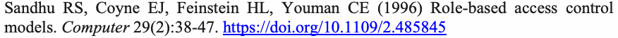

NIST Special Publication · PDF 原文抽出
General Access Control Guidance for Cloud Systems
クラウドシステムのための一般的なアクセス制御ガイダンス
NIST SP 800-210（General Access Control Guidance for Cloud Systems）の英文と日本語訳を段落ごとに並べた閲覧用ページです。IaaS、PaaS、SaaSの各クラウドサービスモデルにおけるアクセス制御の特性と、サービスモデルに応じた一般的な指針を示します。 翻訳は非公式です。要件の確認にはNIST の正式版 PDFを参照してください。
PDF から抽出した原文は原本との照合待ちです。
NIST Special Publication 800-210
NIST特別刊行物800-210
未レビュー訳General Access Control Guidance for
クラウドシステムのための一般的なアクセス制御
未レビュー訳Cloud Systems
ガイダンス
未レビュー訳Vincent C. Hu Michaela Iorga Wei Bao Ang Li Qinghua Li Antonios Gouglidis
Vincent C. Hu、Michaela Iorga、Wei Bao、Ang Li、Qinghua Li、Antonios Gouglidis
未レビュー訳This publication is available free of charge from: https://doi.org/10.6028/NIST.SP.800-210
本刊行物は https://doi.org/10.6028/NIST.SP.800-210 から無料で入手できます。
未レビュー訳C O M P U T E R S E C U R I T Y
コンピューターセキュリティ
未レビュー訳NIST Special Publication 800-210
NIST特別刊行物800-210
未レビュー訳General Access Control Guidance for
クラウドシステムのための一般的なアクセス制御
未レビュー訳Cloud Systems
ガイダンス
未レビュー訳Vincent C. Hu Michaela Iorga Computer Security Division
Vincent C. Hu、Michaela Iorga｜コンピューターセキュリティ部門
未レビュー訳Information Technology Laboratory
情報技術研究所
未レビュー訳Wei Bao Ang Li Qinghua Li
Wei Bao、Ang Li、Qinghua Li
未レビュー訳Department of Computer Science and Computer Engineering
コンピューターサイエンス・コンピューター工学科
未レビュー訳University of Arkansas Fayetteville, AR
アーカンソー大学｜米国アーカンソー州フェイエットビル
未レビュー訳Antonios Gouglidis
Antonios Gouglidis
未レビュー訳School of Computing and Communications
コンピューティング・コミュニケーション学部
未レビュー訳Lancaster University Lancaster, United Kingdom
ランカスター大学｜英国ランカスター
未レビュー訳This publication is available free of charge from: https://doi.org/10.6028/NIST.SP.800-210
本刊行物は https://doi.org/10.6028/NIST.SP.800-210 から無料で入手できます。
未レビュー訳July 2020
2020年7月
未レビュー訳U.S. Department of Commerce Wilbur L. Ross, Jr., Secretary
米国商務省｜Wilbur L. Ross, Jr. 商務長官
未レビュー訳National Institute of Standards and Technology
米国国立標準技術研究所
未レビュー訳Walter Copan, NIST Director and Under Secretary of Commerce for Standards and Technology
Walter Copan｜NIST長官兼標準技術担当商務次官
未レビュー訳Authority
法的根拠
未レビュー訳This publication has been developed by NIST in accordance with its statutory responsibilities under the Federal Information Security Modernization Act (FISMA) of 2014, 44 U.S.C. § 3551 et seq., Public Law (P.L.) 113-283. NIST is responsible for developing information security standards and guidelines, including minimum requirements for federal information systems, but such standards and guidelines shall not apply to national security systems without the express approval of appropriate federal officials exercising policy authority over such systems. This guideline is consistent with the requirements of the Office of Management and Budget (OMB) Circular A-130.
本刊行物は、2014年連邦情報セキュリティ近代化法（FISMA）（44 U.S.C. § 3551以下、Public Law（P.L.）113-283）に基づく法的責任に従い、NISTが作成したものです。NISTは、連邦情報システムの最低要件を含む情報セキュリティ標準と指針を策定する責任を負います。ただし、このような標準と指針は、当該システムに関する政策権限を行使する適切な連邦政府職員の明示的な承認がない限り、国家安全保障システムには適用してはなりません。本指針は行政管理予算局（OMB）通達A-130の要件に沿っています。
未レビュー訳Nothing in this publication should be taken to contradict the standards and guidelines made mandatory and binding on federal agencies by the Secretary of Commerce under statutory authority. Nor should these guidelines be interpreted as altering or superseding the existing authorities of the Secretary of Commerce, Director of the OMB, or any other federal official. This publication may be used by nongovernmental organizations on a voluntary basis and is not subject to copyright in the United States. Attribution would, however, be appreciated by NIST.
本刊行物のいかなる記載も、法的権限に基づき商務長官が連邦政府機関に義務付け、拘束力を持たせた標準や指針に反するものと解釈してはなりません。また、本指針は、商務長官、行政管理予算局（OMB）長官、その他の連邦政府職員が有する既存の権限を変更または無効にするものと解釈してはなりません。本刊行物は非政府組織が任意に利用でき、米国内では著作権の対象ではありません。ただし、NISTの出典を明記していただければ幸いです。
未レビュー訳National Institute of Standards and Technology Special Publication 800-210 Natl. Inst. Stand. Technol. Spec. Publ. 800-210, 34 pages (July 2020) CODEN: NSPUE2
米国国立標準技術研究所 特別刊行物800-210｜NIST特別刊行物800-210、第34ページ（2020年7月）｜CODEN：NSPUE2
未レビュー訳This publication is available free of charge from: https://doi.org/10.6028/NIST.SP.800-210
本刊行物は https://doi.org/10.6028/NIST.SP.800-210 から無料で入手できます。
未レビュー訳原本の表画像

Comments on this publication may be submitted to: National Institute of Standards and Technology Attn: Computer Security Division, Information Technology Laboratory 100 Bureau Drive (Mail Stop 8930) Gaithersburg, MD 20899-8930 Email: sp800-210-comments@nist.gov
本刊行物へのコメントの送付先： 米国国立標準技術研究所｜情報技術研究所 コンピューターセキュリティ部門 宛｜100 Bureau Drive（Mail Stop 8930）｜Gaithersburg, MD 20899-8930｜メール：sp800-210-comments@nist.gov
未レビュー訳All comments are subject to release under the Freedom of Information Act (FOIA).
すべてのコメントは、情報公開法（FOIA）に基づく公開の対象となります。
未レビュー訳Reports on Computer Systems Technology
コンピューターシステム技術に関する報告書
未レビュー訳The Information Technology Laboratory (ITL) at the National Institute of Standards and Technology (NIST) promotes the U.S. economy and public welfare by providing technical leadership for the Nation’s measurement and standards infrastructure. ITL develops tests, test methods, reference data, proof of concept implementations, and technical analyses to advance the development and productive use of information technology. ITL’s responsibilities include the development of management, administrative, technical, and physical standards and guidelines for the cost-effective security and privacy of other than national security-related information in federal information systems. The Special Publication 800-series reports on ITL’s research, guidelines, and outreach efforts in information system security, and its collaborative activities with industry, government, and academic organizations.
米国国立標準技術研究所（NIST）の情報技術研究所（ITL）は、米国の測定・標準インフラにおける技術的リーダーシップを発揮し、米国経済と公共の福祉を促進しています。ITLは、情報技術の発展と有効利用を進めるため、試験、試験方法、参照データ、概念実証の実装、技術分析を開発しています。また、連邦情報システムにおける国家安全保障関連以外の情報について、費用対効果の高いセキュリティとプライバシーを確保するため、管理、運用、技術、物理面の標準と指針を策定しています。特別刊行物800シリーズは、情報システムセキュリティに関するITLの研究、指針、周知活動、および産業界、政府、学術機関との協力活動を報告しています。
未レビュー訳Abstract
概要
未レビュー訳This document presents cloud access control characteristics and a set of general access control guidance for cloud service models: IaaS (Infrastructure as a Service), PaaS (Platform as a Service), and SaaS (Software as a Service). Different service delivery models require managing different types of access on offered service components. Such service models can be considered hierarchical, thus the access control guidance of functional components in a lower-level service model are also applicable to the same functional components in a higher-level service model. In general, access control guidance for IaaS is also applicable to PaaS and SaaS, and access control guidance for IaaS and PaaS is also applicable to SaaS. However, each service model has its own focus with regard to access control requirements for its service.
本書は、クラウドアクセス制御の特性と、IaaS（Infrastructure as a Service）、PaaS（Platform as a Service）、SaaS（Software as a Service）の各クラウドサービスモデルに関する一般的なアクセス制御ガイダンスを示します。提供するサービスモデルによって、サービス構成要素に対して管理すべきアクセスの種類は異なります。サービスモデルは階層構造とみなせるため、下位サービスモデルの機能コンポーネントに関するアクセス制御ガイダンスは、上位モデルに含まれる同じ機能コンポーネントにも適用できます。一般に、IaaS向けのガイダンスはPaaSとSaaSにも適用でき、IaaSおよびPaaS向けのガイダンスはSaaSにも適用できます。ただし、各サービスモデルには、そのサービス固有のアクセス制御要件に関する重点があります。
未レビュー訳Keywords
キーワード
未レビュー訳access control; access control mechanism; Cloud; cloud systems; policy; authorization ABAC;
アクセス制御；アクセス制御機構；クラウド；クラウドシステム；ポリシー；認可；属性ベースアクセス制御（ABAC）；
未レビュー訳RBAC.
ロールベースアクセス制御（RBAC）。
未レビュー訳Acknowledgements
謝辞
未レビュー訳The authors, Vincent C. Hu and Michaela Iorga of the National Institute of Standards and Technology (NIST), Bao Wei, Ang Li, and Qinghua Li of Department of Computer Science and Computer Engineering University of Arkansas, and Antonios Gouglidis of School of Computing and Communications Lancaster University wish to thank Isabel Van Wyk, Jim Foti, and David Ferraiolo (NIST) who reviewed drafts of this document. The authors also gratefully acknowledge and appreciate the comments and contributions made by government agencies, private organizations, and individuals in providing direction and assistance in the development of this document.
著者のVincent C. HuおよびMichaela Iorga（米国国立標準技術研究所［NIST］）、Bao Wei、Ang Li、Qinghua Li（アーカンソー大学コンピューターサイエンス・コンピューター工学科）、Antonios Gouglidis（ランカスター大学コンピューティング・コミュニケーション学部）は、本書の草案をレビューしたIsabel Van Wyk氏、Jim Foti氏、David Ferraiolo氏（NIST）に謝意を表します。また、本書の策定にあたり方向性や支援を提供してくださった政府機関、民間組織、個人の皆様からのコメントと貢献にも、著者一同、深く感謝いたします。
未レビュー訳Patent Disclosure Notice
特許開示に関する通知
未レビュー訳NOTICE: The Information Technology Laboratory (ITL) has requested that holders of patent claims whose use may be required for compliance with the guidance or requirements of this publication disclose such patent claims to ITL. However, holders of patents are not obligated to respond to ITL calls for patents and ITL has not undertaken a patent search in order to identify which, if any, patents may apply to this publication.
通知：情報技術研究所（ITL）は、本刊行物の指針または要件への準拠に使用が必要となる可能性のある特許請求項を保有する者に対し、その請求項をITLに開示するよう求めています。ただし、特許保有者はITLの特許照会に回答する義務を負いません。また、ITLは本刊行物に適用される可能性のある特許の有無を特定するための特許調査を実施していません。
未レビュー訳As of the date of publication and following call(s) for the identification of patent claims whose use may be required for compliance with the guidance or requirements of this publication, no such patent claims have been identified to ITL.
公表日現在、本刊行物の指針または要件への準拠に使用が必要となる可能性のある特許請求項の特定を呼びかけた結果、そのような請求項はITLに報告されていません。
未レビュー訳No representation is made or implied by ITL that licenses are not required to avoid patent infringement in the use of this publication.
本刊行物の利用に伴う特許侵害を回避するためにライセンスが不要であると、ITLが表明または示唆するものではありません。
未レビュー訳Executive Summary
エグゼクティブサマリー
未レビュー訳Cloud systems have been developed over time and conceptualized through a combination of software, hardware components, and virtualization technologies. Characteristics of the cloud, such as resource pooling, rapid elasticity, and pay-as-you-go services, accelerated its wide adoption by industry, government, and academia. Specifically, cloud systems offer application services, data storage, data management, networking, and computing resources management to consumers over a network (the internet in general). Despite the great advancements of cloud systems, concerns have been raised about the offered level of security and privacy. The importance of these concerns becomes more evident when considering the increasing number of users who have adopted cloud services.
クラウドシステムは、ソフトウェア、ハードウェア構成要素、仮想化技術を組み合わせて、時間をかけて開発・概念化されてきました。リソースプーリング、迅速な弾力性、従量課金型サービスなどの特性により、クラウドは産業界、政府、学術界に急速に普及しました。具体的には、クラウドシステムはネットワーク（一般にはインターネット）を介して、アプリケーションサービス、データ保管、データ管理、ネットワーキング、コンピューティングリソース管理を利用者に提供します。大きく進歩した一方で、提供されるセキュリティとプライバシーの水準について懸念も生じています。クラウドサービスを利用する人が増えるにつれ、こうした懸念の重要性はさらに高まっています。
未レビュー訳This document presents cloud access control (AC) characteristics and a set of general access control guidance for cloud service models—IaaS (Infrastructure as a Service), PaaS (Platform as a Service), and SaaS (Software as a Service). The main focus is on technical aspects of access control without considering deployment models (e.g., public, private, hybrid clouds etc.), as well as trust and risk management issues, which require different layers of discussions that depend on the security requirements of the business function or the organization of deployment for which the cloud system is implemented. Different service delivery models need to consider managing different types of access on offered service components. Such considerations can be hierarchical, such as how the access control considerations of functional components in a lower-level service model (e.g., networking and storage layers in the IaaS model) are also applicable to the same functional components in a higher-level service model (e.g., networking and storage in PaaS and SaaS models). In general, access control considerations for IaaS are also applicable to PaaS and SaaS, and access control considerations for IaaS and PaaS are also applicable to SaaS. Therefore, AC guidance for IaaS is applicable to PaaS and SaaS, and AC guidance for IaaS and PaaS is also applicable to SaaS. However, each service model has its own focus with regard to access control requirements for its service.
本書は、クラウドアクセス制御（AC）の特性と、IaaS（Infrastructure as a Service）、PaaS（Platform as a Service）、SaaS（Software as a Service）の各クラウドサービスモデルに関する一般的なアクセス制御ガイダンスを示します。主な対象はアクセス制御の技術面であり、パブリック、プライベート、ハイブリッドクラウドなどの導入モデルや、信頼・リスク管理の問題は扱いません。これらは、クラウドシステムを実装する組織や事業機能のセキュリティ要件に応じて、別の観点から議論する必要があります。サービス提供モデルごとに、提供されるサービス構成要素への異なる種類のアクセスを管理する必要があります。こうした検討は階層的に行えます。たとえば、下位のサービスモデルであるIaaSのネットワーク層やストレージ層に関するアクセス制御上の考慮事項は、PaaSやSaaSの同じ機能コンポーネントにも適用できます。一般にIaaS向けの考慮事項はPaaSとSaaSにも適用でき、IaaSおよびPaaS向けの考慮事項はSaaSにも適用できます。したがって、IaaS向けのアクセス制御ガイダンスはPaaSとSaaSにも、IaaSおよびPaaS向けのガイダンスはSaaSにも適用できます。ただし、各サービスモデルには、そのサービス固有のアクセス制御要件に関する重点があります。
未レビュー訳Table of Contents
目次
未レビュー訳Executive Summary ....................................................................................................................iv
エグゼクティブサマリー ........................................................................................................ iv
未レビュー訳1 Introduction — 1
1 はじめに — 1
未レビュー訳1.1 Purpose — 1
1.1 目的 — 1
未レビュー訳1.2 Scope — 1
1.2 適用範囲 — 1
未レビュー訳1.3 Audience — 1
1.3 対象読者 — 1
未レビュー訳1.4 Document Structure — 1
1.4 文書の構成 — 1
未レビュー訳2 Cloud Access Control Characteristics — 3
2 クラウドアクセス制御の特性 — 3
未レビュー訳3 Access Control Guidance for IaaS — 8
3 IaaSのアクセス制御ガイダンス — 8
未レビュー訳3.1 Guidance for Network — 8
3.1 ネットワークに関するガイダンス — 8
未レビュー訳3.2 Guidance for Hypervisor — 8
3.2 ハイパーバイザーに関するガイダンス — 8
未レビュー訳3.3 Guidance for Virtual Machines — 9
3.3 仮想マシンに関するガイダンス — 9
未レビュー訳3.4 Guidance for APIs — 9
3.4 APIに関するガイダンス — 9
未レビュー訳3.5 Recommendations for IaaS Access Control — 9
3.5 IaaSアクセス制御の推奨事項 — 9
未レビュー訳4 Access Control Guidance for PaaS — 11
4 PaaSのアクセス制御ガイダンス — 11
未レビュー訳4.1 Guidance for Memory Data — 11
4.1 メモリデータに関するガイダンス — 11
未レビュー訳4.2 Guidance for APIs — 11
4.2 APIに関するガイダンス — 11
未レビュー訳4.3 Recommendations for PaaS Access Control — 11
4.3 PaaSアクセス制御の推奨事項 — 11
未レビュー訳5 Access Control Guidance for SaaS — 13
5 SaaSのアクセス制御ガイダンス — 13
未レビュー訳5.1 Guidance for Data Owner’s Control — 13
5.1 データ所有者の制御に関するガイダンス — 13
未レビュー訳5.2 Guidance for Confidentiality — 13
5.2 機密性に関するガイダンス — 13
未レビュー訳5.3 Guidance for Privilege Management — 14
5.3 特権管理に関するガイダンス — 14
未レビュー訳5.4 Guidance for Multiple Replicas of Data — 14
5.4 データの複製に関するガイダンス — 14
未レビュー訳5.5 Guidance for Multi-tenancy — 14
5.5 マルチテナンシーに関するガイダンス — 14
未レビュー訳5.6 Guidance for Attribute and Role Management — 14
5.6 属性とロールの管理に関するガイダンス — 14
未レビュー訳5.7 Guidance for Policies — 15
5.7 ポリシーに関するガイダンス — 15
未レビュー訳5.8 Guidance for APIs — 15
5.8 APIに関するガイダンス — 15
未レビュー訳5.9 Recommendations for SaaS Access Control — 15
5.9 SaaSアクセス制御の推奨事項 — 15
未レビュー訳6 Access Control Guidance for Inter- and Intra- Operation — 18
6 クラウド間連携およびクラウド内連携のためのアクセス制御ガイダンス — 18
未レビュー訳7 Conclusions — 20
7 結論 — 20
未レビュー訳References — 21
参考文献 — 21
未レビュー訳List of Appendices
付録一覧
未レビュー訳Guidance and SP 800-53 Revision 4 Access Control (AC) Family Mapping 25
ガイダンスとSP 800-53改訂第4版アクセス制御（AC）ファミリーの対応表 — 25
未レビュー訳List of Figures
図一覧
未レビュー訳Figure 1: The general architecture of a cloud system — 4
図1：クラウドシステムの一般的なアーキテクチャ — 4
未レビュー訳Figure 2: The service models of a cloud system — 5
図2：クラウドシステムのサービスモデル — 5
未レビュー訳Figure 3: Accesses controlled by the cloud service provider and the consumer — 6
図3：クラウドサービスプロバイダーと利用者がそれぞれ制御するアクセス — 6
未レビュー訳Figure 4: Multiple applications and users of an SaaS provider — 13
図4：SaaSプロバイダーを利用する複数のアプリケーションとユーザー — 13
未レビュー訳Figure 5: The external collaboration (inter-operation) between different Clouds — 18
図5：異なるクラウド間の外部連携（相互運用） — 18
未レビュー訳Figure 6: The internal collaboration (intra-operation) within the same cloud — 19
図6：同一クラウド内の内部連携（内部運用） — 19
未レビュー訳List of Tables
表一覧
未レビュー訳Table 1: Potential policy rules expressed by Subject, Operation, Object for IaaS AC policy — 10
表1：IaaSのアクセス制御ポリシーについて主体、操作、対象で表現したポリシールールの例 — 10
未レビュー訳Table 2: Potential policy rules expressed by Subject, Operation, Object for PaaS AC policy — 12
表2：PaaSのアクセス制御ポリシーについて主体、操作、対象で表現したポリシールールの例 — 12
未レビュー訳Table 3: Potential policy rules expressed by Subject, Operation, Object for SaaS AC policy — 17
表3：SaaSのアクセス制御ポリシーについて主体、操作、対象で表現したポリシールールの例 — 17
未レビュー訳Table 4 Mapping the cloud access control guidance to the AC controls listed in NIST SP 800-53, Revision
表4：クラウドアクセス制御ガイダンスとNIST SP 800-53に列挙されたアクセス制御（AC）管理策との対応 — 改訂第
未レビュー訳4 — 25
4版 — 25
未レビュー訳1 Introduction
1 はじめに
未レビュー訳1.1 Purpose
1.1 目的
未レビュー訳Access control (AC) dictates how subjects (i.e., users and processes) can access objects based on defined AC policies to protect sensitive data and critical computing objects in the cloud systems. Considering the heterogeneity and remote nature of the cloud service models, AC and its general concepts should be revisited. In recent years, many works have focused on AC in cloud systems [23, 25, 26, 27]. However, these are primarily ad hoc solutions targeted at specific cloud applications and do not provide comprehensive views of cloud AC.
アクセス制御（AC）は、定義されたアクセス制御ポリシーに基づき、主体（ユーザーやプロセス）がクラウドシステム内の対象にアクセスする方法を定め、機微データや重要なコンピューティング対象を保護します。クラウドサービスモデルは多様で、遠隔から提供されるため、アクセス制御とその一般概念を改めて検討する必要があります。近年、クラウドシステムのアクセス制御に関する研究が数多く行われています［23、25、26、27］。しかし、その多くは特定のクラウドアプリケーションを対象とする個別解決策であり、クラウドアクセス制御を包括的に捉えていません。
未レビュー訳This document presents a set of general AC guidance for cloud service models independent from its deployment models because it requires another layer of access control that depends on the security requirements of the business function for which the cloud system is used. As shown in Figure 3, different cloud service models require the management of access to different components of the offered service. Since such cloud service models can be considered hierarchical, the AC considerations of functional components in a lower-level (according to Figure 2) service model (e.g., networking and storage layers in the Infrastructure as a Service (IaaS) model) are also applicable to the same functional components in a higher-level service model (e.g., networking and storage in Platform as a Service (PaaS) and Software as a Service (SaaS) models). In general, AC considerations for IaaS are also applicable to PaaS and SaaS, and AC considerations for IaaS and PaaS are also applicable to SaaS. Thus, AC guidance for IaaS is applicable to PaaS and SaaS, and AC guidance for IaaS and PaaS is also applicable to SaaS. However, each service model has its own focus with regard to AC. For instance, an IaaS provider may put more effort into virtualization control, and in addition to the virtualization control, a SaaS provider needs to consider data security and the privacy of services it provides.
本書は、導入モデルに依存しない、クラウドサービスモデル向けの一般的なアクセス制御ガイダンスを示します。導入モデルには、クラウドシステムが使用される事業機能のセキュリティ要件に応じて別の層のアクセス制御が必要となるためです。図3に示すように、クラウドサービスモデルごとに、提供サービスの異なる構成要素へのアクセス管理が必要です。サービスモデルは階層構造とみなせるため、下位モデル（図2に従う）の機能コンポーネント（例：Infrastructure as a Service［IaaS］モデルのネットワーク層やストレージ層）に関するアクセス制御上の考慮事項は、上位モデル（例：Platform as a Service［PaaS］やSoftware as a Service［SaaS］モデル）の同じ機能コンポーネントにも適用されます。一般に、IaaS向けの考慮事項はPaaSとSaaSにも適用でき、IaaSおよびPaaS向けの考慮事項はSaaSにも適用できます。同様に、IaaS向けのアクセス制御ガイダンスはPaaSとSaaSにも、IaaSおよびPaaS向けのガイダンスはSaaSにも適用できます。ただし、アクセス制御について各サービスモデルには固有の重点があります。たとえば、IaaSプロバイダーは仮想化制御により重点を置き、SaaSプロバイダーは仮想化制御に加えて、提供するサービスのデータセキュリティとプライバシーも考慮する必要があります。
未レビュー訳1.2 Scope
1.2 適用範囲
未レビュー訳This document focuses on providing guidance for access control systems that are applicable to an organization’s cloud implementation and security management. It does not prescribe the internal cloud access control standards that an organization may need in their enterprise systems or within a community other than the organization itself.
本書は、組織のクラウド導入とセキュリティ管理に適用できるアクセス制御システムのガイダンスを提供します。組織のエンタープライズシステム内で必要となる内部クラウドアクセス制御標準や、その組織以外のコミュニティに適用する標準は規定しません。
未レビュー訳1.3 Audience
1.3 対象読者
未レビュー訳The intended audience for this document is an organizational entity that implements access control solutions for sharing information in cloud systems. This document assumes that readers are familiar with the cloud and access (authorization) control systems and have basic knowledge of operating systems, databases, networking, and security. Given the constantly changing nature of the information technology (IT) industry, readers are strongly encouraged to take advantage of other documents—including those listed in this document—for more current and detailed information.
本書の対象読者は、クラウドシステムで情報を共有するためのアクセス制御ソリューションを実装する組織です。読者はクラウドとアクセス（認可）制御システムに精通し、オペレーティングシステム、データベース、ネットワーク、セキュリティの基礎知識を持つことを想定しています。情報技術（IT）業界は絶えず変化するため、本書に挙げた文書を含む他の刊行物を参照し、より新しく詳細な情報を得ることを強く推奨します。
未レビュー訳1.4 Document Structure
1.4 文書の構成
未レビュー訳The sections and appendix presented in this document are as follows:
本書の各節と付録の内容は、次のとおりです。
未レビュー訳•Section 1 states the purpose and scope of access control and cloud systems.
•第1節では、アクセス制御とクラウドシステムの目的および適用範囲を説明します。
未レビュー訳•Section 2 provides an overview of cloud access control characteristics.
•第2節では、クラウドアクセス制御の特性を概説します。
未レビュー訳•Section 3 discusses guidance for access control systems for IaaS (Infrastructure as a Service).
•第3節では、IaaS（Infrastructure as a Service）のアクセス制御システムに関するガイダンスを説明します。
未レビュー訳•Section 4 discusses guidance for access control systems for PaaS (Platform as a Service).
•第4節では、PaaS（Platform as a Service）のアクセス制御システムに関するガイダンスを説明します。
未レビュー訳•Section 5 discusses guidance for access control systems for SaaS (Software as a Service).
•第5節では、SaaS（Software as a Service）のアクセス制御システムに関するガイダンスを説明します。
未レビュー訳•Section 6 discusses guidance for access control systems for inter- and intra-cloud operations.
•第6節では、クラウド間およびクラウド内の運用に関するアクセス制御システムのガイダンスを説明します。
未レビュー訳•Section 7 concludes the document with future directions.
•第7節では、今後の方向性を示して本書を締めくくります。
未レビュー訳2 Cloud Access Control Characteristics
2 クラウドアクセス制御の特性
未レビュー訳With the support of different service models, cloud systems can provide a wide range of services to its end-users, developers, and system administrators. Cloud systems have been developed over time and conceptualized through a combination of software, hardware components, and virtualization technologies. Characteristics of the cloud, such as resource pooling, rapid elasticity, and pay-as-you-go services, have accelerated its wide adoption by industry, government, and academia. Specifically, cloud systems offer application services, data storage, data management, networking, and computing resources management to consumers1 over a network (and the internet in general). Examples of popular cloud applications include web-based email services (e.g., Google’s Gmail, Microsoft’s Office 365 Outlook), data storage (e.g., Google Drive, Microsoft’s OneDrive, Dropbox) for end users, and consumer relationship management and business intelligence systems (e.g., Customer Relationship Management (CRM) Cloud, Workday) for business management. Despite the great advancements of cloud systems, concerns have been raised about offered levels of security and privacy. The importance of these concerns becomes more evident when considering the increasing number of users that have adopted cloud services [1].
各種サービスモデルを通じ、クラウドシステムはエンドユーザー、開発者、システム管理者に幅広いサービスを提供できます。クラウドシステムは、ソフトウェア、ハードウェア構成要素、仮想化技術を組み合わせて、時間をかけて開発・概念化されてきました。リソースプーリング、迅速な弾力性、従量課金型サービスなどの特性により、産業界、政府、学術界に急速に普及しました。具体的には、クラウドシステムはネットワーク（一般にはインターネット）を介し、アプリケーションサービス、データ保管、データ管理、ネットワーキング、コンピューティングリソース管理を消費者[1]に提供します。一般利用者向けの代表的なクラウドアプリケーションには、ウェブメール（例：Google Gmail、Microsoft Office 365 Outlook）やデータ保管サービス（例：Google Drive、Microsoft OneDrive、Dropbox）があります。企業管理向けには、顧客関係管理（CRM）クラウドやWorkdayなどの人事・業務管理システム、ビジネスインテリジェンスシステムがあります。クラウドシステムが大きく進歩した一方で、提供されるセキュリティとプライバシーの水準について懸念も生じています。クラウドサービスの利用者が増えるにつれ、こうした懸念の重要性はさらに高まっています[1]。
未レビュー訳NIST publications defines cloud computing as “a model for enabling ubiquitous, convenient, on-demand network access to a shared pool of configurable computing resources (e.g., networks, servers, storage, applications, and services) that can be rapidly provisioned and released with minimal management effort or service provider interaction” [2,3]. Cloud deployment models (e.g., public cloud, private cloud, community cloud, hybrid cloud, etc.) are configured by the scope of cloud users, services, and resources based on service requirements, they may be deployed privately, hosted on the premises of a cloud consumer or provider’s dedicated infrastructure, or hosted publicly by one or more cloud service providers. The system may be configured and used by one consumer or a group of trusted partners or support multi-tenancy and be used publicly by different end users who acquire the service. Depending on the type of cloud deployment model, the cloud may have limited private computing resources or access to large quantities of remotely accessed resources. The different deployment models present a number of trade-offs in how consumers can control their resources as well as the scale, cost, and availability of those resources [4]. As depicted in Figure 1, the architecture of a cloud system is composed, in general, by layers of functions:
NISTの刊行物では、クラウドコンピューティングを「ネットワーク、サーバー、ストレージ、アプリケーション、サービスなど、構成可能なコンピューティングリソースの共有プールに、どこからでも便利にオンデマンドでネットワークアクセスでき、最小限の管理作業やサービスプロバイダーとのやり取りで、迅速に提供・解放できるモデル」と定義しています[2, 3]。クラウド導入モデル（パブリック、プライベート、コミュニティ、ハイブリッドなど）は、サービス要件に基づくクラウド利用者、サービス、リソースの範囲に応じて構成されます。プライベートに導入し、クラウド利用者またはプロバイダー専用のインフラ上にホストする場合もあれば、1つ以上のクラウドサービスプロバイダーがパブリックにホストする場合もあります。システムは、1人の利用者または信頼できるパートナーグループが使うように構成することも、マルチテナント方式で一般公開し、サービスを契約する複数のエンドユーザーが使うように構成することもできます。導入モデルによって、クラウドが提供するプライベートなコンピューティングリソースは限られる場合も、大量のリモートリソースにアクセスできる場合もあります。各導入モデルには、利用者によるリソース制御、リソースの規模、コスト、可用性に関するトレードオフがあります[4]。図1に示すように、クラウドシステムのアーキテクチャは一般に、次の機能層で構成されます。
未レビュー訳•VM (Virtual Machine), including: - Applications - Application Programming Interface (API) - Operating System (OS)
•VM（仮想マシン）、以下を含む：アプリケーション、アプリケーションプログラミングインターフェース（API）、オペレーティングシステム（OS）
未レビュー訳•Hypervisor
•ハイパーバイザー
未レビュー訳•Storage
•ストレージ
未レビュー訳•Networking
•ネットワーキング
未レビュー訳•Hardware
•ハードウェア
未レビュー訳
クラウドモデルの層構造を示す図。仮想マシン（VM）内に複数のアプリケーション、API、OSがあり、その下にハイパーバイザー、ストレージ、ネットワーク、ハードウェアが並ぶ。右側のユーザーは、データ／サービスと双方向に通信する。
Figure 1: The general architecture of a cloud system
図1：クラウドシステムの一般的なアーキテクチャ
未レビュー訳A cloud service can provide access to software applications, such as email or office productivity tools (i.e., the Software as a Service, or SaaS, service model); an environment for consumers to build and operate their own software (i.e., the Platform as a Service, or PaaS, service model), or network access to virtualized computing resources such as processing power and storage (i.e., the Infrastructure as a Service, or IaaS, service model). The different service models have different strengths and are suitable for different consumers and business objectives [4], as illustrated in Figure 2, the arrows show the support relations between models.
クラウドサービスは、メールやオフィス生産性ツールなどのソフトウェアアプリケーション（Software as a Service、SaaSモデル）、利用者が独自のソフトウェアを構築・運用する環境（Platform as a Service、PaaSモデル）、または処理能力やストレージなどの仮想化コンピューティングリソースへのネットワークアクセス（Infrastructure as a Service、IaaSモデル）を提供できます。サービスモデルにはそれぞれ異なる強みがあり、利用者や事業目標に応じて適性が異なります[4]。図2に示すとおり、矢印はモデル間の支援関係を表します。
未レビュー訳A cloud system that deploys the SaaS model can be accessible over a network by an end user utilizing various client devices (e.g., a thin client interface, such as a web browser, for accessing a web-based email application) or via a program with the correct set of interfaces whose execution would enable communication with a cloud application. In the SaaS model, an application user is limited to user-specific application configuration settings and does not manage or control the underlying cloud infrastructure, which typically includes the network, servers, operating systems, storage, or individual applications.
SaaSモデルを導入するクラウドシステムには、エンドユーザーが各種クライアント機器を使ってネットワーク経由でアクセスできます。たとえば、ウェブブラウザーなどのシンクライアントからウェブメールを利用する方法や、適切なインターフェースを備えて実行時にクラウドアプリケーションと通信するプログラムを利用する方法があります。SaaSモデルでは、アプリケーション利用者が設定できるのはユーザー固有のアプリケーション構成に限られます。通常、ネットワーク、サーバー、オペレーティングシステム、ストレージ、個々のアプリケーションなど、基盤となるクラウドインフラを管理・制御することはできません。
未レビュー訳
IaaS、PaaS、SaaSを積み重ねた階層図。最下段のIaaSにはIT管理者、中段のPaaSにはソフトウェア開発者、最上段のSaaSにはアプリケーション利用者が対応する。矢印は下位サービスが上位サービスを支える関係を示す。
Figure 2: The service models of a cloud system
図2：クラウドシステムのサービスモデル
未レビュー訳The PaaS model in a cloud system allows developers to create and deploy applications onto the cloud infrastructure using programming languages, libraries, services, and tools. A software developer does not manage or control the underlying cloud infrastructure but has control over the deployed applications (software) and, possibly, configuration settings for the application-hosting environment.
クラウドシステムのPaaSモデルでは、開発者がプログラミング言語、ライブラリ、サービス、ツールを使い、クラウドインフラ上でアプリケーションを作成・配備できます。ソフトウェア開発者は基盤となるクラウドインフラを管理・制御しませんが、配備したアプリケーション（ソフトウェア）と、場合によってはアプリケーション実行環境の構成設定を制御できます。
未レビュー訳When analyzing the responsibilities between consumer and cloud service providers for protecting cloud data, it is not always clear-cut, if an IaaS system provides only the computation resources, or offers also the virtualized storage, and network resources to consumers for deploying and running arbitrary software, including operating systems and applications. The consumer may in turn have control over virtual storage, virtualized network components, and the ability to deploy their own VMs and applications given access provisioned by the cloud service provider.
クラウドデータを保護するために利用者とクラウドサービスプロバイダーが負う責任を分析する際、IaaSシステムが計算リソースだけを提供するのか、それとも任意のソフトウェア（オペレーティングシステムやアプリケーションを含む）を配備・実行できるよう、仮想化ストレージやネットワークリソースも提供するのかは、必ずしも明確ではありません。クラウドサービスプロバイダーから許可されたアクセスに応じて、利用者は仮想ストレージや仮想ネットワーク構成要素を制御し、自らのVMやアプリケーションを配備できる場合があります。
未レビュー訳The shared responsibility of access control needs to be considered in the PaaS and SaaS model [42]; For example software developers might need to access data in systems provided by PaaS for their developmental needs, and internal application users (i.e., users that need to access the application system data) might need to access application system data that is managed by the applications. In general, for PaaS, consumer software developers might share access control responsibilities with cloud service providers; for SaaS, internal application users might share such responsibilities with cloud service providers.
PaaSおよびSaaSモデルでは、アクセス制御に関する責任の共有を考慮する必要があります[42]。たとえば、ソフトウェア開発者は開発のためにPaaSが提供するシステム内のデータにアクセスする必要がある場合があります。また、アプリケーション内部の利用者（アプリケーションシステムのデータにアクセスする必要のある利用者）は、アプリケーションが管理するデータにアクセスする必要がある場合があります。一般に、PaaSでは利用者側のソフトウェア開発者がクラウドサービスプロバイダーとアクセス制御の責任を共有し、SaaSではアプリケーション内部の利用者がプロバイダーと責任を共有する場合があります。
未レビュー訳Note that unless there is express prior approval from the consumer, a PaaS or SaaS provider must manage access control with the IaaS provider and the consumer (if it is not also the IaaS provider). If the consumer approves, the provider should inform the consumer of its intention to store the specified data in the IaaS provider, where it will be accessed as well as the extent to which the data can be accessed by the IaaS provider, foreign entities, or authorities. A public consultation and hearing process must then be conducted before a decision is made.
利用者から事前に明示的な承認を得ない限り、PaaSまたはSaaSプロバイダーは、IaaSプロバイダーおよび利用者（自らがIaaSプロバイダーでもある場合を除く）と連携してアクセス制御を管理しなければなりません。利用者が承認した場合、プロバイダーは指定データをIaaSプロバイダーに保管する意向、そのデータがどこからアクセス可能になるか、IaaSプロバイダー、外国の組織、当局がアクセスできる範囲を利用者に通知すべきです。その後、決定を下す前に公開の協議と公聴会を実施しなければなりません。
未レビュー訳
IaaS、PaaS、SaaSの各列に、アプリケーションからネットワークまでの構成要素を示す図。青色はクラウド利用者が制御する範囲、黄色はプロバイダーが制御する範囲を示し、PaaSとSaaSのデータ層は利用者とプロバイダーの双方の領域にまたがる。
Figure 3: Accesses controlled by the cloud service provider and the consumer
図3：クラウドサービスプロバイダーと利用者がそれぞれ制御するアクセス
未レビュー訳The five essential characteristics that challenge AC system design are summarized as follows [2]:
アクセス制御システムの設計に課題をもたらす、クラウドの5つの基本特性を次にまとめます[2]。
未レビュー訳1.Broad network access: Cloud services are available over the network and accessible through standard mechanisms that promote use by heterogeneous thick and thin client platforms (e.g., mobile phones, tablets, laptops, workstations). This raises security concerns with regard to network access. For example, denial of service (DoS) attacks can be launched against a cloud system, rendering its resources unavailable to legitimate users. Thus, AC for network access should be managed.
1.広範なネットワークアクセス：クラウドサービスはネットワーク経由で利用でき、携帯電話、タブレット、ノートパソコン、ワークステーションなど、多様なシンクライアントやシッククライアントからの利用を促す標準的な仕組みを通じてアクセスできます。これにより、ネットワークアクセスに関するセキュリティ上の懸念が生じます。たとえば、クラウドシステムにサービス拒否（DoS）攻撃が仕掛けられ、正当な利用者がリソースを使えなくなる可能性があります。そのため、ネットワークアクセスのアクセス制御を管理する必要があります。
未レビュー訳2.Resource pooling: The computing resources of a cloud system (e.g., storage, memory, processing, network bandwidth) are pooled to serve multiple consumers using a multi-tenant model (i.e., a single instance of the software and its supporting infrastructure serves multiple consumers) through different physical and virtual resources, each dynamically assigned and reassigned according to consumer demands. Information may be leaked if the resource allocated to a consumer can be accessed by another co-located consumer or if the allocated resource, such as memory, is not wiped before being reallocated to another consumer. There is also a sense of location independence in that the consumer generally has no control over or knowledge of the exact location of the provided resources. Location may be specified at a higher level of abstraction (e.g., country, state, data center) that brings
2.リソースプーリング：クラウドシステムのコンピューティングリソース（ストレージ、メモリ、処理能力、ネットワーク帯域幅など）をプールし、マルチテナント方式（1つのソフトウェアとそれを支えるインフラのインスタンスが複数の消費者にサービスを提供する方式）で複数の消費者に提供します。さまざまな物理・仮想リソースが、消費者の需要に応じて動的に割り当て・再割り当てされます。割り当てられたリソースに同じ場所を利用する別の消費者がアクセスできる場合や、メモリなどのリソースを別の消費者に再割り当てする前に消去しない場合、情報が漏えいする可能性があります。また、消費者は通常、提供リソースの正確な場所を制御・把握できないという、場所からの独立性もあります。所在地は国、州、データセンターなどの抽象度の高い情報で示されることがあり、セキュリティ上の懸念につながります。
未レビュー訳security concerns. Therefore, methods for implementing resource pooling while ensuring the isolation of shared resources should be considered in the AC design.
したがって、共有リソースの分離を確保しながらリソースプーリングを実装する方法を、アクセス制御設計で検討すべきです。
未レビュー訳3.Rapid elasticity: Cloud services can be elastically provisioned and released—automatically, in some cases—to rapidly scale outward and inward commensurate with demands. To the consumer, services available for provisioning often appear to be unlimited and appropriated in any quantity at any time and are supported by adding new virtual machines (VMs) with specified computing resources. A challenge for AC design involves the capability to rapidly verify the security of new VMs and determine whether the newly added VMs are qualified to execute a specific task.
3.迅速な弾力性：クラウドサービスは需要に応じて迅速に規模を拡大・縮小できるよう、場合によっては自動的に、柔軟に割り当て・解放できます。消費者には、割り当て可能なサービスが無制限で、いつでも必要な量を利用できるように見えることが多く、指定されたコンピューティングリソースを持つ新しい仮想マシン（VM）の追加によって支えられています。アクセス制御設計の課題は、新しいVMのセキュリティを迅速に検証し、特定タスクを実行する資格があるかを判断することです。
未レビュー訳4.Measured service: Cloud systems automatically control and optimize resource use by leveraging a metering capability at some level of abstraction appropriate to the type of service (e.g., storage, processing, bandwidth, active end user accounts). Resource usage is monitored, controlled, and reported to provide transparency to both the provider and consumer of the utilized service. To maintain resource usage, cloud consumers should be authorized to review but not to modify their own metering data since this could lead to the falsification of payments required for cloud services. Thus, it is reasonable for AC to consider the protection of metering data.
4.計測されたサービス：クラウドシステムは、サービスの種類に適した抽象度（ストレージ、処理、帯域幅、アクティブなエンドユーザーアカウントなど）で計測機能を利用し、リソース使用量を自動的に制御・最適化します。利用状況を監視、制御、報告し、利用したサービスについてプロバイダーと消費者の双方に透明性を提供します。リソース使用量の記録を維持するため、クラウド消費者には自分の計測データを確認する権限を与える一方、変更する権限は与えないようにすべきです。変更を許すと、クラウドサービスの支払額を偽るおそれがあります。そのため、アクセス制御では計測データの保護を考慮するのが妥当です。
未レビュー訳5.Data sharing: Sharing information among different organizations is not a trivial task since a cloud system needs to meet the same security requirements of organizations to achieve that. To facilitate data sharing, concepts such as trust of federated identities and AC attributes need to be considered, and building that trust is paramount. In this document, it is assumed that trust and federated identities/attributes are already established, and further discussion on that topic will be considered in another document. Regardless of the service model, consumers are entitled to be responsible for the security of their cloud-based data and, implicitly, of who has access to it [5]. For this reason, data is never controlled by cloud service providers but rather always stays with the cloud consumers. (The exception to this is log data, but consideration should still be given to how privacy and security is affected by such data.) Although a cloud service provider might become the custodian of consumers’ data, it should not have access to that data. If a consumer’s data is not encrypted, then cloud administrators might be able to read it. In such a case, the consumer’s data should be identified (by the provider’s access privileges to the data) and red-flagged as accessible by the service provider, and the consumer should be informed immediately.
5.データ共有：異なる組織間で情報を共有することは容易ではありません。クラウドシステムも、それを実現するには組織と同じセキュリティ要件を満たす必要があります。データ共有を促進するには、フェデレーションされたIDへの信頼やアクセス制御属性などを考慮する必要があり、その信頼を築くことが極めて重要です。本書では、信頼とフェデレーションID・属性はすでに確立されていると想定し、この話題の詳細は別の文書で扱います。サービスモデルにかかわらず、消費者はクラウド上のデータと、誰がそのデータにアクセスできるかについて責任を負います[5]。したがってデータはクラウドサービスプロバイダーが制御するのではなく、常にクラウド消費者の管理下にあります（ログデータは例外ですが、そのデータがプライバシーやセキュリティに与える影響も考慮すべきです）。クラウドサービスプロバイダーが消費者データの保管者になる場合でも、そのデータにアクセスできるべきではありません。データが暗号化されていなければ、クラウド管理者が読み取れる可能性があります。その場合、プロバイダーのアクセス権限に基づいて該当データを特定し、サービスプロバイダーからアクセス可能であると明示するとともに、消費者へ直ちに通知すべきです。
未レビュー訳Guidance for AC system for each cloud service model, as described in Sections 3, 4, and 6 of this document, can be further extended to system requirements by referring to the AC control elements listed in NIST SP 800-53, Revision 4, Security and Privacy Control for Federal Information Systems and Organizations [6] based on the operation requirements of the cloud service. Appendix A maps the guidance to the AC control elements listed in the NIST SP 800-53, Revision 4.
各クラウドサービスモデルのアクセス制御システムに関する本書のガイダンス（第3、4、6節）は、クラウドサービスの運用要件に基づき、NIST SP 800-53改訂第4版『連邦情報システムおよび組織のためのセキュリティとプライバシーの管理策』[6]に記載されたアクセス制御管理策の要素を参照することで、システム要件に拡張できます。付録Aでは、本ガイダンスとNIST SP 800-53改訂第4版のアクセス制御管理策要素との対応を示します。
未レビュー訳3 Access Control Guidance for IaaS
3 IaaSのアクセス制御ガイダンス
未レビュー訳IaaS is the cornerstone of all cloud services that offer computing and storage through a network such as the internet. Through virtualization technology, IaaS enables end users to dynamically allocate computing resources by instantiating new virtual machines (VMs) or releasing them based on their requirements. A VM is a software container that behaves like a physical machine with its own operating system (OS) and virtual resources (e.g., CPU, memory, hard disk, etc.). Leasing VMs is more cost-effective than purchasing new physical machines. The virtualization technology is composed of VMs and a hypervisor, as shown in Figure 1. VMs are managed by the hypervisor, which controls the flow of data and instructions between the VMs and the physical hardware. On the consumer side, system administrators are usually the major users of IaaS services since IaaS services are flexible to configure resources (e.g., network, data storage).
IaaSは、インターネットなどのネットワークを介してコンピューティングとストレージを提供する、すべてのクラウドサービスの基盤です。仮想化技術により、エンドユーザーは要件に応じて新しい仮想マシン（VM）を作成したり、不要になったVMを解放したりして、コンピューティングリソースを動的に割り当てられます。VMは、独自のオペレーティングシステム（OS）と仮想リソース（CPU、メモリ、ハードディスクなど）を持つ物理マシンのように動作するソフトウェアコンテナーです。VMを借りる方が新しい物理マシンを購入するより費用対効果に優れています。図1に示すように、仮想化技術はVMとハイパーバイザーで構成されます。VMはハイパーバイザーによって管理され、ハイパーバイザーはVMと物理ハードウェア間のデータおよび命令の流れを制御します。利用者側では、ネットワークやデータストレージなどのリソースを柔軟に構成できるため、システム管理者がIaaSサービスの主な利用者となるのが一般的です。
未レビュー訳Cloud virtualization adds additional security management burdens by introducing security controls that arise from combining multiple VMs onto a single physical computer, which can have potential negative impacts if a security compromise occurs. Some cloud systems make it easy to share information among VMs by, for instance, allowing users to create multiple VMs on top of the same hypervisor if multiple VMs are available. However, this convenience can also become an attack vector since data leakage could occur among VMs. Additionally, virtualized environments are transient since they are created and vanish frequently, thereby making the creation and maintenance of necessary security boundaries more complex.
クラウド仮想化では、複数のVMを1台の物理コンピューター上に統合することで新たなセキュリティ管理負担が生じ、侵害が発生した場合に悪影響を及ぼす可能性があります。クラウドシステムによっては、1つのハイパーバイザー上で複数のVMを利用できるようにするなど、VM間の情報共有を容易にしています。しかし、この利便性が攻撃経路となり、VM間でデータが漏えいすることもあります。また、仮想環境は頻繁に作成・消滅する一時的な性質を持つため、必要なセキュリティ境界の作成と維持がより複雑になります。
未レビュー訳As shown in Figure 3, data in the middleware, data, applications, and OS layers is owned and controlled by the consumer. The IaaS system and the consumer need to ensure that access to the data is not granted to IaaS system administrators or any other IaaS consumers in these layers unless any of them are permitted. IaaS administrators are responsible for access control on the virtual machine, hypervisor, storage, and networking layers and should consider Sections 3.1 to 3.5 below.
図3に示すように、ミドルウェア、データ、アプリケーション、OSの各層にあるデータは利用者が所有・管理します。許可されていない限り、IaaSシステムと利用者は、これらの層のデータへのアクセスをIaaSシステム管理者や他のIaaS利用者に許可しないようにしなければなりません。IaaS管理者は仮想マシン、ハイパーバイザー、ストレージ、ネットワーク各層のアクセス制御を担い、以下の3.1～3.5節のガイダンスを考慮すべきです。
未レビュー訳3.1 Guidance for Network
3.1 ネットワークに関するガイダンス
未レビュー訳The network is shared among IaaS consumers, and it is important to secure the network traffic and the cloud’s environment from being exploited by unauthorized consumers. Thus, access control for network boundaries and allowlists for network communications are required and may be applied through, for example, dedicated virtual local area networks (VLANs) leveraging automated access control lists (ACLs). Using the Institute of Electrical and Electronics Engineers (IEEE) 802.1Q VLAN tagging for network traffic with a cloud data center will result in routing only traffic tagged with the server’s unique VLAN identifier to or from that server [7].
ネットワークはIaaS利用者間で共有されるため、権限のない利用者による悪用からネットワークトラフィックとクラウド環境を保護することが重要です。そのため、ネットワーク境界のアクセス制御と、ネットワーク通信の許可リストが必要です。これらは、たとえば自動化されたアクセス制御リスト（ACL）を活用した専用仮想ローカルエリアネットワーク（VLAN）で実施できます。クラウドデータセンター内のネットワークトラフィックに米国電気電子学会（IEEE）802.1QのVLANタグ付けを用いると、サーバー固有のVLAN識別子が付いたトラフィックのみがそのサーバーとの間でルーティングされます[7]。
未レビュー訳3.2 Guidance for Hypervisor
3.2 ハイパーバイザーに関するガイダンス
未レビュー訳A hypervisor plays an important role in the security of the entire virtualized architecture since it manages consumer loads and guest operating systems (OSs),2 creates new guest OS images, and controls hardware resources. The security implications of actions like managing guest OS and hardware resources means that access to the hypervisor should be restricted to authorized cloud administrators only. Otherwise, a cloud end user could potentially obtain a VM from the cloud service provider and install a malicious guest OS that compromises the hypervisor by gaining unauthorized access to and altering the memory of other VMs [8]. Moreover, an attacker in a VM with lower access rights may be able to escalate their access privilege to a higher level by compromising the hardware resources allocation within the hypervisor [9]. Protecting the hypervisor from unauthorized access is therefore critical to the security of IaaS services.
ハイパーバイザーは、利用者のワークロードやゲストOS[2]を管理し、新しいゲストOSイメージを作成し、ハードウェアリソースを制御するため、仮想化アーキテクチャ全体のセキュリティで重要な役割を果たします。ゲストOSとハードウェアリソースを管理する操作にはセキュリティ上の影響があるため、ハイパーバイザーへのアクセスは認可されたクラウド管理者のみに制限すべきです。そうしないと、クラウドのエンドユーザーがサービスプロバイダーからVMを取得し、悪意のあるゲストOSをインストールして、他のVMのメモリへの不正アクセスや改変を通じてハイパーバイザーを侵害する可能性があります[8]。さらに、アクセス権の低いVM内の攻撃者が、ハイパーバイザー内のハードウェアリソース割り当てを侵害し、より高いレベルのアクセス権へ昇格できる場合があります[9]。したがって、ハイパーバイザーを不正アクセスから保護することはIaaSサービスのセキュリティに不可欠です。
未レビュー訳3.3 Guidance for Virtual Machines
3.3 仮想マシンに関するガイダンス
未レビュー訳VMs that are created by different end users allow resources to be shared among multiple end users. In such cases, it must be ensured that no application from one VM can directly access other VMs since covert channels [10, 11] may leak information between VMs by accessing shared physical resources (e.g., memory). Similarly, although the ability to copy and paste information between VMs via the clipboard is a convenient feature, such a capability could be made available on other VMs running on the same hypervisor and thus introduce an attack vector (i.e., information can be leaked to other VMs through the clipboard). Organizations should have policies regarding the use of shared clipboards.
異なるエンドユーザーが作成したVMを使うことで、複数のエンドユーザー間でリソースを共有できます。この場合、あるVMのアプリケーションが他のVMへ直接アクセスできないようにしなければなりません。共有物理リソース（メモリなど）へのアクセスを通じて、隠れチャネルがVM間で情報を漏えいさせる可能性があるためです[10, 11]。同様に、クリップボードを介してVM間で情報をコピー・貼り付けできる機能は便利ですが、同じハイパーバイザー上で動作する他のVMでも利用できる場合があり、攻撃経路となり得ます（クリップボードを通じて他のVMに情報が漏えいする可能性があります）。組織は共有クリップボードの使用に関するポリシーを定めるべきです。
未レビュー訳Isolation between VMs is necessary to keep VMs running independently of each other, and quotas on VM resource usage should be regulated so that a malicious VM can be prohibited from exhausting computation resources. If a malicious application consumes the majority of computation resources, legitimate applications may not be able to obtain sufficient resources to perform their operations. Moreover, end users might terminate the execution of their tasks before they are finished. The state and data of the current VM would then be saved as a guest OS image, and when the task is resumed, the VM might be migrated from a different hypervisor. In such scenarios, guest OS images must be protected from unauthorized access, tampering, or storage. Furthermore, VMs that are not active may also store sensitive data. Monitoring access to the sensitive data in inactive VMs should be considered.
VMが互いに独立して動作できるよう分離する必要があります。また、悪意あるVMが計算リソースを使い尽くせないよう、VMリソース使用量のクォータを管理すべきです。悪意あるアプリケーションが計算リソースの大半を消費すると、正当なアプリケーションが処理に必要なリソースを得られない可能性があります。さらに、エンドユーザーがタスクの完了前に実行を終了する場合があります。その場合、稼働中のVMの状態とデータはゲストOSイメージとして保存され、タスク再開時にVMが別のハイパーバイザーへ移行されることがあります。このような状況では、ゲストOSイメージを不正アクセスや改ざんから保護し、安全に保管しなければなりません。停止中のVMにも機微データが保存されている場合があります。停止中のVMにある機微データへのアクセスを監視することを検討すべきです。
未レビュー訳3.4 Guidance for APIs
3.4 APIに関するガイダンス
未レビュー訳There are several popular open-source platforms for deploying an IaaS system [12, 13, 14]. These solution platforms enable APIs to manage access control of VMs, hypervisors, and networks (note that a consumer cannot control hypervisors and networks in a multi-tenant environment unless it is a private cloud) . For example, [14] consists of control components, including API, communication, lifecycle, storage, volume, scheduler, network, API server for managing AC policies for hypervisors, and network controller for constructing network bridges and firewall AC rules. The lack of monitoring AC within these APIs might result in unenforced or wrongly enforced AC policies by the hypervisors, VMs, and networks. Thus, a service for monitoring the AC APIs in cloud platforms should also be taken into consideration.
IaaSシステムの導入に利用できる、一般的なオープンソースプラットフォームがいくつかあります[12, 13, 14]。これらのプラットフォームでは、APIを使ってVM、ハイパーバイザー、ネットワークのアクセス制御を管理できます（ただし、プライベートクラウドでないマルチテナント環境では、利用者はハイパーバイザーやネットワークを制御できません）。たとえば[14]は、API、通信、ライフサイクル、ストレージ、ボリューム、スケジューラー、ネットワークなどの制御コンポーネントを備え、ハイパーバイザーのアクセス制御ポリシーを管理するAPIサーバーや、ネットワークブリッジとファイアウォールのアクセス制御ルールを構成するネットワークコントローラーを含みます。これらのAPI内でアクセス制御を監視しないと、ハイパーバイザー、VM、ネットワークでポリシーが適用されない、または誤って適用される可能性があります。そのため、クラウドプラットフォームのアクセス制御APIを監視するサービスも検討すべきです。
未レビュー訳3.5 Recommendations for IaaS Access Control
3.5 IaaSアクセス制御の推奨事項
未レビュー訳As shown in previous sections, the security of an IaaS cloud system is heavily dependent on the virtualization (hypervisor). One of the most widely adopted solutions for protecting them is a virtualization management system [15], which lies between the underlying hardware and the hypervisor. The virtualization management system enforces AC on both hypervisors and VMs in different ways. Virtualization management systems enforce different levels of access on different users. Some users are given read-only access to the administrative interface of a guest OS; some are allowed to control particular guest OSs; and some are given complete administrative control. There are existing solutions for providing AC for hypervisors and VMs. For example, the approach in [16] secures the hypervisor against control hijacking attacks by protecting its code from unauthorized access and offering isolation of VMs with the flexible security of mandatory access control (MAC). To enforce AC on interoperations, a service level agreement should be designed to include appropriate control to secure external interoperations. Other isolation mechanisms [17, 18] are helpful in ensuring the security of internal interoperations.
前節までに示したように、IaaSクラウドシステムのセキュリティは仮想化（ハイパーバイザー）に大きく依存します。これを保護するために広く採用されている方法の一つが、基盤ハードウェアとハイパーバイザーの間に置く仮想化管理システムです[15]。この管理システムは、さまざまな方法でハイパーバイザーとVMの双方にアクセス制御を適用します。利用者によって許可されるアクセスレベルも異なります。ゲストOSの管理インターフェースに読み取り専用でアクセスできる利用者、特定のゲストOSを制御できる利用者、管理者として全面的に制御できる利用者がいます。ハイパーバイザーとVMにアクセス制御を提供する既存のソリューションもあります。たとえば[16]の方式は、コードを不正アクセスから保護し、柔軟なセキュリティの強制アクセス制御（MAC）によってVMを分離することで、制御乗っ取り攻撃からハイパーバイザーを守ります。クラウド間連携にアクセス制御を適用するため、外部連携を保護する適切な管理策をサービスレベル合意書（SLA）に含めるべきです。その他の分離機構[17, 18]は、クラウド内部の連携を安全にするのに役立ちます。
未レビュー訳Guideline rules for IaaS AC policy that consider the main elements in AC (i.e., subject, object, and operation) are listed in Table 1. While each row indicates a possible AC rule, the AC policy designer should ultimately decide whether the decision in each rule is permitted or denied based on system requirements. For example, if an authorized IaaS end user requires the use of cloud services, a login operation in the hypervisor for the end user should be granted; otherwise, it should be denied.
IaaSアクセス制御ポリシーの指針ルールを、アクセス制御の主な要素（主体、対象、操作）に基づいて表1に示します。各行はアクセス制御ルールの候補を表しますが、各ルールで許可するか拒否するかは、システム要件に基づいてポリシー設計者が最終的に決めます。たとえば、認可されたIaaSエンドユーザーがクラウドサービスの利用を求める場合、そのエンドユーザーによるハイパーバイザーへのログイン操作を許可し、それ以外の場合は拒否します。
未レビュー訳Table 1: Potential policy rules expressed by Subject, Operation, Object for IaaS AC policy
表1：主体、操作、対象で表現したIaaSアクセス制御ポリシーのルール例
未レビュー訳| Subjects | Operations | Objects | Environment Conditions |
| IaaS end user | Login, Read, Write, Create | Hypervisor | Time, Location, Security impact level etc. |
| IaaS end user | Read, Write, Create | VMs | Time, Location, Security impact level etc. |
| VM | Write | Hypervisor | Time, Location, Security impact level etc. |
| VM | Read, Write | Other VMs within the same host | Time, Location, Security impact level etc. |
| VM | Read, Write, Create | Guest OS images | Time, Location, Security impact level etc. |
| VM | Read, Write | Other VMs from different hosts but within the same IaaS provider | Time, Location, Security impact level etc. |
| VM | Read, Write | Other VMs from different IaaS providers | Time, Location, Security impact level etc. |
| Hypervisor | Read, Write, Create | Guest OS images | Time, Location, Security impact level etc. |
| Hypervisor | Read, Write | Hardware resources | Time, Location, Security impact level etc. |
| Hypervisor | Read, Write, Create | VMs | Time, Location, Security impact level etc. |
原本の表画像

| 主体 | 操作 | 対象 | 環境条件 |
| IaaSエンドユーザー | ログイン、読み取り、書き込み、作成 | ハイパーバイザー | 時間、所在地、セキュリティ影響度など |
| IaaSエンドユーザー | 読み取り、書き込み、作成 | VM | 時間、所在地、セキュリティ影響度など |
| VM | 書き込み | ハイパーバイザー | 時間、所在地、セキュリティ影響度など |
| VM | 読み取り、書き込み | 同一ホスト上の他のVM | 時間、所在地、セキュリティ影響度など |
| VM | 読み取り、書き込み、作成 | ゲストOSイメージ | 時間、所在地、セキュリティ影響度など |
| VM | 読み取り、書き込み | 同一IaaSプロバイダー内の別ホストにある他のVM | 時間、所在地、セキュリティ影響度など |
| VM | 読み取り、書き込み | 別のIaaSプロバイダーにある他のVM | 時間、所在地、セキュリティ影響度など |
| ハイパーバイザー | 読み取り、書き込み、作成 | ゲストOSイメージ | 時間、所在地、セキュリティ影響度など |
| ハイパーバイザー | 読み取り、書き込み | ハードウェアリソース | 時間、所在地、セキュリティ影響度など |
| ハイパーバイザー | 読み取り、書き込み、作成 | VM | 時間、所在地、セキュリティ影響度など |
4 Access Control Guidance for PaaS
4 PaaSのアクセス制御ガイダンス
未レビュー訳PaaS is a platform that provides a framework for developers to create and deploy customized applications. As shown in Figure 3, security assurance considerations include some and all below the data level, and during the application development process lifecycle should be offered by the PaaS provider. The primary focus of AC in the PaaS model is to protect data during runtime, which is managed by middleware and OS. PaaS systems are primarily concerned with developing, deploying and operating customer applications. The security and privacy offered by the PaaS provider protect the applications and data from potential leaks through a covert channel introduced by unsecure shared memory. Therefore, enforcing AC over data during runtime in the PaaS is critical for the security of PaaS services.
PaaSは、開発者がカスタマイズしたアプリケーションを作成・配備するための枠組みを提供するプラットフォームです。図3に示すとおり、PaaSプロバイダーはデータ層およびその下の層の一部または全部について、セキュリティ保証を提供すべきです。また、アプリケーション開発ライフサイクル全体を通じた保証も必要です。PaaSモデルのアクセス制御は、ミドルウェアとOSが管理する実行時のデータ保護を主な目的とします。PaaSシステムは、顧客アプリケーションの開発、配備、運用を主に支援します。PaaSプロバイダーが提供するセキュリティとプライバシーは、安全でない共有メモリによる隠れチャネルを通じてアプリケーションやデータが漏えいするのを防ぎます。そのため、PaaSで実行時データへのアクセス制御を適用することは、PaaSサービスのセキュリティに不可欠です。
未レビュー訳The PaaS system administrator is responsible for the access control of runtime, middleware, OS, virtual machine, hypervisor, storage, and networking layers, as described by the guidance in Sections 4.1 to 4.3 below.
PaaSシステム管理者は、以下の4.1～4.3節のガイダンスに従い、実行環境、ミドルウェア、OS、仮想マシン、ハイパーバイザー、ストレージ、ネットワーク各層のアクセス制御を担います。
未レビュー訳4.1 Guidance for Memory Data
4.1 メモリデータに関するガイダンス
未レビュー訳The PaaS system permits users to deploy tasks in a provider-controlled middleware and host OS, which may be shared with other PaaS applications. As such, PaaS typically leverages OS-based techniques (e.g., Linux Containers and Docker for isolating applications) [19]. However, numerous existing memory-related attacks can compromise sensitive application-related data by hacking through the shared OS memory in PaaS [20]. Thus, AC for OS memory, such as AC of different processes on top of processor caches [21], should be considered.
PaaSシステムでは、プロバイダーが管理するミドルウェアとホストOS上に、利用者がタスクを配備できます。これらは他のPaaSアプリケーションと共有される場合があります。そのためPaaSでは、アプリケーションを分離するLinuxコンテナーやDockerなど、OSベースの技術が一般的に利用されます[19]。一方、既存の多くのメモリ関連攻撃は、PaaSの共有OSメモリを侵害し、機微なアプリケーションデータを危険にさらす可能性があります[20]。したがって、プロセッサキャッシュ上で動作する異なるプロセス間のアクセス制御[21]など、OSメモリのアクセス制御を考慮すべきです。
未レビュー訳4.2 Guidance for APIs
4.2 APIに関するガイダンス
未レビュー訳As the PaaS system allows cloud developers to build applications on top of the platform, APIs should control the scope of each user’s application such that user data remains inaccessible between different applications. In addition, packaged APIs can be serviced as microservices in a PaaS cloud. A centralized architecture for provisioning and enforcement of access policies governing access to all microservices is required due to the sheer number of services needed for service composition to support real-world business transactions (e.g., consumer order processing and shipping). Since each of the microservices may be implemented in a different language, policy provisioning and computation of access decisions may require the use of an authorization server [22].
PaaSシステムではクラウド開発者がプラットフォーム上にアプリケーションを構築するため、異なるアプリケーション間でユーザーデータにアクセスできないよう、APIで各ユーザーのアプリケーションの範囲を制御すべきです。また、パッケージ化されたAPIはPaaSクラウドでマイクロサービスとして提供される場合があります。現実の業務取引（消費者の注文処理や配送など）を支えるサービス構成では、必要となるサービスが非常に多いため、すべてのマイクロサービスへのアクセスを統制するアクセス制御ポリシーの設定・適用に、中央集約型アーキテクチャが必要です。各マイクロサービスは異なる言語で実装される場合があるため、ポリシーの設定とアクセス決定の計算には認可サーバーが必要となる可能性があります[22]。
未レビュー訳4.3 Recommendations for PaaS Access Control
4.3 PaaSアクセス制御の推奨事項
未レビュー訳An efficient method should be established for protecting memory data by flushing processor caches during context switches. However, in order to avoid significant performance degradation, only highly sensitive memory data should be flushed.
コンテキスト切り替え時にプロセッサキャッシュをフラッシュしてメモリデータを保護する、効率的な方法を確立すべきです。ただし、大幅な性能低下を避けるため、フラッシュするデータは特に機微なものに限定すべきです。
未レビュー訳To handle access control for multiple replicas of data, a method to manage the central AC policy system should be introduced. Thus, once the data within a PaaS provider is duplicated across PaaS providers, any change in the policy should result in an appropriate update to the central AC policy system. Moreover, the AC policy related to the replicated data in other PaaS providers should be synchronized accordingly based on an AC policy in the central system.
データの複数レプリカに対するアクセス制御を行うには、中央アクセス制御ポリシーシステムを管理する方式を導入すべきです。PaaSプロバイダーのデータが複数のPaaSプロバイダー間で複製された場合、ポリシーが変更されると中央システムにも適切に反映される必要があります。さらに、他のPaaSプロバイダーに複製されたデータに関するポリシーも、中央システムのポリシーに基づいて同期すべきです。
未レビュー訳Guideline rules for PaaS AC policy are listed in Table 2 with respect to the three basic elements of AC (i.e., subject, object, and operation). Each row indicates a possible AC rule, but the AC designer should decide whether access should be granted or denied based on the system requirements. For example, if a user of an application needs to access memory data related to their application, permission to read memory data will be granted. However, access to that memory data will be denied to other users.
PaaSアクセス制御ポリシーの指針ルールを、アクセス制御の3つの基本要素（主体、対象、操作）に基づいて表2に示します。各行はルールの候補ですが、アクセスを許可するか拒否するかは、システム要件に基づいてアクセス制御設計者が決めます。たとえば、アプリケーションの利用者が自分のアプリケーションに関係するメモリデータへアクセスする必要がある場合、そのメモリデータの読み取りを許可します。他の利用者には、そのデータへのアクセスを許可しません。
未レビュー訳Table 2: Potential policy rules expressed by Subject, Operation, Object for PaaS AC policy
表2：主体、操作、対象で表現したPaaSアクセス制御ポリシーのルール例
未レビュー訳| Subjects | Operations | Objects | Environment Conditions |
| Application user | Read | Memory data | Time, Location, Security impact level etc. |
| VM of a hosted application | Read, Write | Other applications’ data within the same host | Time, Location, Security impact level etc. |
| Application developer | Create, Read, Write | Middleware data, memory data | Time, Location, Security impact level etc. |
| Cloud service provider | Replicate | Application-related data | Time, Location, Security impact level etc. |
原本の表画像

| 主体 | 操作 | 対象 | 環境条件 |
| アプリケーション利用者 | 読み取り | メモリデータ | 時間、所在地、セキュリティ影響度など |
| ホストされたアプリケーションのVM | 読み取り、書き込み | 同一ホスト上の他のアプリケーションのデータ | 時間、所在地、セキュリティ影響度など |
| アプリケーション開発者 | 作成、読み取り、書き込み | ミドルウェアデータ、メモリデータ | 時間、所在地、セキュリティ影響度など |
| クラウドサービスプロバイダー | 複製 | アプリケーション関連データ | 時間、所在地、セキュリティ影響度など |
5 Access Control Guidance for SaaS
5 SaaSのアクセス制御ガイダンス
未レビュー訳In SaaS, a cloud service provider delivers an application as a service to end users through a network such as the internet. Thus, there is no need for users to install and execute applications locally on their own computers. As shown in Figure 4, multiple applications and users can be supported simultaneously by the cloud system to share common resources, including applications and underlying databases.
SaaSでは、クラウドサービスプロバイダーがインターネットなどのネットワークを介して、アプリケーションをサービスとしてエンドユーザーに提供します。そのため、ユーザーは自分のコンピューターにアプリケーションをインストールして実行する必要がありません。図4に示すように、クラウドシステムでは複数のアプリケーションとユーザーが同時にサポートされ、アプリケーションや基盤データベースなどの共通リソースを共有できます。
未レビュー訳
1つのSaaSクラウド内に複数のアプリケーション（APP）と共有データベースがあり、スマートフォン、ノートパソコン、デスクトップPCを使う複数のユーザーがそれぞれアクセスする構成図。
Figure 4: Multiple applications and users of an SaaS provider
図4：SaaSプロバイダーを利用する複数のアプリケーションとユーザー
未レビュー訳If a developer deploys a third-party application, data in that application and other unrelated applications might be stored in the cloud system. End users have to rely on the security and privacy offered by the cloud service provider to protect their data from unauthorized access introduced by those unrelated applications. Note that data managed by the application layer is owned and controlled by the consumer. The SaaS system and consumer need to ensure that access to application data in these layers is not granted to the SaaS system administrator, consumers, or other users unless they are trusted. SaaS administrators are responsible for the access control of all operation layers except for the consumer’s application data as shown in Figure 3 and should consider the guidance in Sections 3, 4, and 5.1 to 5.4.
開発者がサードパーティー製アプリケーションを配備すると、そのアプリケーションと無関係な他のアプリケーションのデータが同じクラウドシステムに保管される場合があります。エンドユーザーは、無関係なアプリケーションを通じた不正アクセスからデータを保護するため、クラウドサービスプロバイダーが提供するセキュリティとプライバシーに依存します。アプリケーション層が管理するデータは、利用者が所有・制御します。SaaSシステムと利用者は、信頼されている場合を除き、SaaSシステム管理者、他の消費者、その他のユーザーにアプリケーションデータへのアクセスを許可しないようにしなければなりません。図3に示すように、SaaS管理者は消費者のアプリケーションデータを除くすべての運用層のアクセス制御を担い、第3、4、5.1～5.4節のガイダンスを考慮すべきです。
未レビュー訳5.1 Guidance for Data Owner’s Control
5.1 データ所有者の制御に関するガイダンス
未レビュー訳A data provider is the creator or source of application data owned by consumer organizations. Application data is typically stored in the SaaS service provider’s database. How a data provider manages access to its data is a challenge. Example questions to be addressed are related to data retention by the provider (e.g., where data is kept and for how long) and whether the provider has any permission to determine access rights to the data it hosts. If a data provider has the capability to determine access rights on data it holds, consideration should be given to ensure that an up-to-date AC policy is always enforced within the SaaS system.
データプロバイダーとは、消費者組織が所有するアプリケーションデータの作成者または提供元です。アプリケーションデータは通常、SaaSサービスプロバイダーのデータベースに保管されます。データプロバイダーが自らのデータへのアクセスをどのように管理するかは課題です。検討すべき事項には、プロバイダーによるデータ保持（どこに、どれだけの期間保管するかなど）や、ホストするデータのアクセス権をプロバイダー自身が決定できるかどうかがあります。データプロバイダーが保有データのアクセス権を決定できる場合、SaaSシステムで常に最新のアクセス制御ポリシーを適用する方法を検討すべきです。
未レビュー訳5.2 Guidance for Confidentiality
5.2 機密性に関するガイダンス
未レビュー訳In the application deployment model, the integrity of sensitive data residing within the data owner’s domain must be protected. Protection mechanisms for application data include data encryption schemes by which data can be encrypted through certain cryptographic primitives, and decryption keys will only be disclosed to authorized users [23]. For such enforcement, attribute-based access control (ABAC) [24] and attribute-based encryption (ABE) schemes can be used to control access to SaaS data [23, 25, 26, 27, 28] since these schemes can use the identity of users through attributes to manage, encrypt, and decrypt application data. However, considering the high volume of data in the SaaS model, the involved encryption and decryption significantly reduce performance. Hence, when encryption is used, consideration should be given to ensure the confidentiality of data while offering good performance.
アプリケーション導入モデルでは、データ所有者の管理領域内にある機微データの完全性を保護しなければなりません。アプリケーションデータの保護には、暗号学的プリミティブを用いてデータを暗号化し、復号鍵を認可されたユーザーにのみ開示する方式があります[23]。この保護には、属性ベースアクセス制御（ABAC）[24]や属性ベース暗号（ABE）方式を用いてSaaSデータへのアクセスを制御できます[23, 25, 26, 27, 28]。これらの方式では、ユーザーのIDに関する属性を用いて、アプリケーションデータへのアクセスを管理し、暗号化・復号できます。ただし、SaaSモデルではデータ量が多いため、暗号化と復号によって性能が大きく低下します。したがって、暗号化を用いる場合は、十分な性能を維持しながらデータの機密性を確保する方法を検討すべきです。
未レビュー訳5.3 Guidance for Privilege Management
5.3 特権管理に関するガイダンス
未レビュー訳In addition to AC enforcement, privilege management involves adding, removing, and changing the privileges of a subject. It is crucial to design a flexible or real-time mechanism for assigning and revoking privileges to maintain the usability of the SaaS service [29].
アクセス制御の適用に加え、特権管理では主体の権限の追加、削除、変更を扱います。SaaSサービスの使いやすさを維持するため、権限を柔軟に、またはリアルタイムで割り当て・取り消しできる仕組みを設計することが重要です[29]。
未レビュー訳5.4 Guidance for Multiple Replicas of Data
5.4 データの複数レプリカに関するガイダンス
未レビュー訳To maintain high availability, the cloud service provider may replicate data at multiple locations, even across countries. Thus, it is important to make sure that all data replicas are protected under the same AC policy. In other words, the same AC policy for the replicated data object should be populated to all hosts that process the same data. The technology for policy synchronization upon changes must also be considered for inclusion.
高可用性を維持するため、クラウドサービスプロバイダーは国境を越えて複数の場所にデータを複製する場合があります。そのため、すべてのデータ複製が同じアクセス制御ポリシーで保護されるようにすることが重要です。つまり、複製された同一のデータ対象に適用するアクセス制御ポリシーを、そのデータを処理するすべてのホストに反映させる必要があります。ポリシー変更時に同期する技術も導入対象として検討すべきです。
未レビュー訳5.5 Guidance for Multi-tenancy
5.5 マルチテナンシーに関するガイダンス
未レビュー訳The SaaS system introduces additional considerations with regard to the management of access to applications. An immediate necessity is to focus on users’ access to applications. The access rights are granted to end users through AC policies based on predefined attributes or roles. This can be specified by attribute-based access control (ABAC) policy models [30, 31], role-based access control [32] (RBAC), and context-based access control [33] (CBAC).
SaaSシステムでは、アプリケーションへのアクセス管理に関する追加の考慮事項が生じます。まず、ユーザーによるアプリケーションへのアクセスに焦点を当てる必要があります。事前に定義された属性やロールに基づき、アクセス制御ポリシーを通じてエンドユーザーにアクセス権を付与します。これには、属性ベースアクセス制御（ABAC）ポリシーモデル[30, 31]、ロールベースアクセス制御（RBAC）[32]、コンテキストベースアクセス制御（CBAC）[33]を使用できます。
未レビュー訳The SaaS model is a typical, multi-tenancy platform that supports multiple end users simultaneously accessing an application with the data of different users’ applications residing at the same location. Exploiting vulnerabilities in the application or injecting code into the SaaS system might expose data to other users [34]. Therefore, strategic planning should be given to implementing multi-tenancy while segregating data from different users’ applications during the design of an AC system.
SaaSモデルは、異なるユーザーのアプリケーションデータが同じ場所に保管された状態で、複数のエンドユーザーが同じアプリケーションに同時にアクセスする、典型的なマルチテナントプラットフォームです。アプリケーションの脆弱性を悪用したり、SaaSシステムにコードを注入したりすると、他のユーザーにデータが露出する可能性があります[34]。そのため、アクセス制御システムの設計時には、マルチテナンシーを実装しながら、異なるユーザーのアプリケーション間でデータを分離する方法を計画すべきです。
未レビュー訳5.6 Guidance for Attribute and Role Management
5.6 属性とロールの管理に関するガイダンス
未レビュー訳In the SaaS system, attribute and role-based AC management employs policies and predefined roles to manage access rights to applications and underlying databases. The primary challenge of deploying attribute or role-based AC management is reaching an agreement on what types of attributes or roles should be used and what should be considered when designing the AC systems [35]. If the set of considered attributes or roles is too small, flexibility will be reduced. However, if the number of attributes or roles is too large, the complexity of policies will increase.
SaaSシステムでは、属性またはロールに基づくアクセス制御管理に、アプリケーションや基盤データベースへのアクセス権を管理するポリシーと事前定義されたロールを使用します。導入時の主な課題は、どの種類の属性やロールを使うか、アクセス制御システムの設計で何を考慮するかについて合意することです[35]。考慮する属性やロールが少なすぎると柔軟性が低下します。一方、多すぎるとポリシーが複雑になります。
未レビュー訳5.7 Guidance for Policies
5.7 ポリシーに関するガイダンス
未レビュー訳SaaS applications provide application-specific access control configurations for different user applications, and in this case, user policies for each application are enforced by the SaaS provider. This configuration does not support collaboration between the SaaS provider and the consumer’s access control infrastructure. For example, while large organizations often employ on-premises access control systems for managing their users centrally and efficiently, SaaS applications typically provide organizations with an AC configuration interface for managing AC policies, which forces the AC policies to be stored and evaluated on the SaaS provider’s side. This approach might result in disclosing sensitive data required for evaluating the AC policies to the SaaS provider. Therefore, methods for enforcing authorization in the SaaS provider while not disclosing sensitive access control data to the SaaS provider should be considered. Federated authorization [36] is an efficient technique that utilizes a middleware layer to transfer the management of access control policies from the SaaS provider to the consumer side and enforce policies on the SaaS applications without disclosing sensitive data required for evaluating the policies.
SaaSアプリケーションでは、ユーザーアプリケーションごとに固有のアクセス制御設定を提供し、各アプリケーションのユーザーポリシーをSaaSプロバイダー側で適用します。この設定方式では、SaaSプロバイダーと消費者のアクセス制御インフラを連携できません。たとえば、大規模組織はユーザーを一元的かつ効率的に管理するオンプレミスのアクセス制御システムを使用することが多い一方、SaaSアプリケーションでは通常、組織がポリシーを管理するための設定インターフェースを提供します。その結果、アクセス制御ポリシーはSaaSプロバイダー側に保管され、評価されます。この方式では、ポリシー評価に必要な機微データをプロバイダーに開示する可能性があります。したがって、ポリシー評価に必要な機微データをSaaSプロバイダーに開示せず、同プロバイダー側で認可を適用する方法を検討すべきです。フェデレーション認可[36]は、ミドルウェア層を用いてアクセス制御ポリシーの管理をSaaSプロバイダー側から消費者側に移し、ポリシー評価用の機微データを開示せずにSaaSアプリケーション上でポリシーを適用する効率的な技術です。
未レビュー訳5.8 Guidance for APIs
5.8 APIに関するガイダンス
未レビュー訳An API in the SaaS model serves as an interface between the cloud server and its users. The API should be designed to protect against both accidental and malicious attempts to circumvent any AC policy. Applications for organizations and third parties often build upon the APIs, which introduce the AC complexity of the new layered API. For example, if the APIs do not require memory access for their tasks, then the AC policy for the APIs should enforce the non-memory access. Additionally, AC policies should be specified to manage the authorization process for web APIs. For example, when APIs connect through SOAP and REST protocols, the AC should control whether to allow end users to interface between Microsoft or non-Microsoft tools and technologies. For authorized API connections through Simple Object Access Protocol (SOAP) and Representational State Transfer (REST) protocols, the AC should grant all related access requested by the protocols. For unauthorized API connections through these protocols, no access or partial access should be granted by the AC.
SaaSモデルのAPIは、クラウドサーバーとユーザーの間のインターフェースとして機能します。偶発的または悪意あるアクセス制御ポリシーの回避を防ぐよう設計すべきです。組織やサードパーティーのアプリケーションはAPI上に構築されることが多く、新たな階層型APIのアクセス制御が複雑になります。たとえばAPIのタスクにメモリへのアクセスが不要であれば、APIのポリシーでメモリへのアクセスを禁止すべきです。また、ウェブAPIの認可プロセスを管理するアクセス制御ポリシーを定める必要があります。たとえばAPIがSOAPまたはRESTプロトコルで接続する場合、Microsoft製とMicrosoft以外のツール・技術間でエンドユーザーの接続を許可するかどうかをアクセス制御で決めるべきです。SOAP（Simple Object Access Protocol）およびREST（Representational State Transfer）を介した認可済みAPI接続には、プロトコルが要求する関連アクセスをすべて許可すべきです。未認可のAPI接続には、アクセスを一切許可しないか、部分的なアクセスにとどめるべきです。
未レビュー訳5.9 Recommendations for SaaS Access Control
5.9 SaaSアクセス制御の推奨事項
未レビュー訳With regard to multi-tenancy, authorization may be enforced using a centralized, decentralized, or hybrid authorization system. In a centralized authorization system, the SaaS provider manages a central authorization database for every end user and their accounts [37]. In a decentralized or hybrid authorization system, individual tenants are responsible for all or part of the authorization process. Note that different tenants may require different systems. Considering the attributes or roles of tenants is crucial when selecting the most suitable system. There are many ways to specify attributes or roles, such as in ABAC and RBAC models [31,32]. Attributes or roles must be well-designed and take into account hierarchy relationships when implementing AC policies for different tenants.
マルチテナンシーについては、一元型、分散型、またはハイブリッド型の認可システムを使って認可を適用できます。一元型では、SaaSプロバイダーがすべてのエンドユーザーとそのアカウントの認可データベースを管理します[37]。分散型またはハイブリッド型では、個々のテナントが認可プロセスの全部または一部を担います。テナントごとに必要なシステムは異なる場合があります。最適なシステムを選ぶには、テナントの属性やロールを考慮することが重要です。ABACやRBACモデル[31, 32]などを使って、属性やロールをさまざまな方法で定義できます。異なるテナント向けにアクセス制御ポリシーを実装する際は、階層関係を考慮して属性やロールを適切に設計しなければなりません。
未レビュー訳Authorization federation [36] is an efficient way to enforce AC policies in the SaaS provider. A generic middleware architecture that incorporates access control requirements from consumers and handles local and remote attributes or roles can be used to extend and shift AC policy management from the SaaS provider to the consumer side. This approach centralizes consumer AC policy management and lowers the required trust in the SaaS provider. In addition, the AC for VM-supporting federation operations should also be specified (e.g., an end user may create a VM to run different applications). Within the VM of the same host, one application may need to access the application code of other applications to fulfill its task. Unlike the PaaS architecture, where consumers can fully manage the design, testing, and development of the software, SaaS consumers have limited control of the applications hosted in the cloud server.
認可フェデレーション[36]は、SaaSプロバイダーでアクセス制御ポリシーを適用する効率的な方法です。消費者のアクセス制御要件を取り込み、ローカル・リモート双方の属性やロールを扱う汎用ミドルウェアアーキテクチャを使って、アクセス制御ポリシーの管理をSaaSプロバイダー側から消費者側へ拡張・移行できます。この方法は消費者側でのポリシー管理を一元化し、SaaSプロバイダーに求める信頼を軽減します。また、フェデレーション運用を支えるVMへのアクセス制御も定める必要があります（たとえば、エンドユーザーが異なるアプリケーションを実行するVMを作成する場合があります）。同一ホスト上のVM内では、あるアプリケーションがタスクを実行するために他のアプリケーションのコードへアクセスする必要がある場合があります。ソフトウェアの設計、試験、開発を消費者が全面的に管理できるPaaSアーキテクチャとは異なり、SaaSの消費者はクラウドサーバーにホストされたアプリケーションを限定的にしか制御できません。
未レビュー訳To achieve the application data owner’s control, a security class agreement (SCA) [28] may be of use. SCA is mutually agreed upon by both the data provider of PaaS subscribers and the PaaS service provider and is used for defining the security class of data providers. Multiple replicas of the same data share the same security level as its data provider. This means that given data from a particular data provider, the security class for multiple replicas of the data should be identical. As a result, the host within the PaaS service that is qualified for executing the access request can be determined by referring to the SCA. The data provider can manage access to its data by specifying security classes for the SCA to keep the data provider and the cloud host synchronized in determining the access right of data. For example, in a Bell-LaPadula model [38], assuming a patient’s report is written by a doctor with confidential clearance, the report can only be read by a host with the same or higher security clearance. Additionally, when multiple data sources that are not intended to be accessed in the same cloud system are accessed, the privacy of data should not be leaked due to different security classes of these data sources and their data in the SCA. However, due to the high computation complexity of encryption and decryption, cryptographic schemes should be carefully designed to maintain the performance of cloud systems while protecting data confidentiality.
アプリケーションデータ所有者の制御を実現するには、セキュリティクラス合意書（SCA）[28]が役立つ場合があります。SCAは、PaaS加入者側のデータプロバイダーとPaaSサービスプロバイダーが相互に合意し、データプロバイダーのセキュリティクラスを定義するために用います。同一データの複数レプリカには、データプロバイダーと同じセキュリティレベルを適用します。つまり、特定のデータプロバイダーが提供したデータについて、複数レプリカのセキュリティクラスは同一であるべきです。その結果、SCAを参照してアクセス要求を実行する資格のあるPaaSホストを特定できます。データプロバイダーは、SCAにセキュリティクラスを指定し、データのアクセス権を管理できます。これにより、データプロバイダーとクラウドホストはアクセス権の判断を同期できます。たとえばBell-LaPadulaモデル[38]では、機密取扱資格を持つ医師が患者の報告書を作成した場合、同等以上のセキュリティ資格を持つホストのみがその報告書を読み取れます。また、同一クラウドシステム内でのアクセスを意図していない複数のデータソースにアクセスする場合、SCAで各データソースに異なるセキュリティクラスが設定されていることによってデータのプライバシーが漏えいしないようにすべきです。ただし暗号化・復号の計算量は大きいため、データの機密性を保護しつつクラウドの性能を維持できるよう、暗号方式を慎重に設計する必要があります。
未レビュー訳A privilege management infrastructure (PMI) [39] can be employed to dynamically manage assigning and revoking privileges through the use of attributes or role specification certificates in the PaaS model. PMI specifies the privileges for different users and links the privileges with different attribute or role specification certificates, which contain different attribute or role assignments to enforce privilege management.
特権管理インフラストラクチャ（PMI）[39]を利用すると、PaaSモデルで属性証明書またはロール指定証明書を用いて、特権の割り当てや取り消しを動的に管理できます。PMIはさまざまなユーザーの特権を定め、それらを異なる属性またはロールの割り当てを含む証明書に関連付けて、特権管理を適用します。
未レビュー訳To handle access control of multiple replicas of data, a method to manage the central AC policy system should be introduced. Thus, once the data within an SaaS provider is duplicated across SaaS providers, any change in the policy should result in an appropriate update to the central AC policy system. Moreover, the AC policy related to the replicated data in other SaaS providers should be synchronized accordingly based on an AC policy in the central system.
複数のデータレプリカへのアクセス制御を行うには、中央アクセス制御ポリシーシステムを管理する方式を導入すべきです。SaaSプロバイダー内のデータが複数のSaaSプロバイダー間で複製された場合、ポリシーが変更されると中央システムにも適切に反映される必要があります。さらに、他のSaaSプロバイダーに複製されたデータに関するポリシーも、中央システムのポリシーに基づいて同期すべきです。
未レビュー訳Guideline rules for SaaS AC policy are listed in Table 3. The AC designer should decide whether access in each rule is permitted or denied based on the system requirements. For example, during federation operation, VM read/write to other application code within the same host is permitted; otherwise, it is denied.
SaaSアクセス制御ポリシーの指針ルールを表3に示します。各ルールでアクセスを許可するか拒否するかは、システム要件に基づいてアクセス制御設計者が決めます。たとえば、フェデレーション運用中に、VMが同一ホスト上の他のアプリケーションコードを読み書きすることは許可されます。それ以外の場合は拒否されます。
未レビュー訳Table 3: Potential policy rules expressed by Subject, Operation, Object for SaaS AC policy
表3：主体、操作、対象で表現したSaaSアクセス制御ポリシーのルール例
未レビュー訳| Subjects | Operations | Objects | Environment Conditions |
| Application user | Read, Write | Application-related data | Time, Location, Security impact level etc. |
| Application user | Read | Memory | Time, Location, Security impact level etc. |
| Application user | Execute | Application | Time, Location, Security impact level etc. |
| Application user | Read, Write | Application data | Time, Location, Security impact level etc. |
| Application user | Execute | Application code | Time, Location, Security impact level etc. |
| VM of a hosted application | Execute | Other application code within the same host | Time, Location, Security impact level etc. |
原本の表画像

| 主体 | 操作 | 対象 | 環境条件 |
| アプリケーション利用者 | 読み取り、書き込み | アプリケーション関連データ | 時間、所在地、セキュリティ影響度など |
| アプリケーション利用者 | 読み取り | メモリ | 時間、所在地、セキュリティ影響度など |
| アプリケーション利用者 | 実行 | アプリケーション | 時間、所在地、セキュリティ影響度など |
| アプリケーション利用者 | 読み取り、書き込み | アプリケーションデータ | 時間、所在地、セキュリティ影響度など |
| アプリケーション利用者 | 実行 | アプリケーションコード | 時間、所在地、セキュリティ影響度など |
| ホストされたアプリケーションのVM | 実行 | 同一ホスト上の他のアプリケーションコード | 時間、所在地、セキュリティ影響度など |
6 Access Control Guidance for Inter- and Intra- Operation
6 クラウド間・クラウド内運用のためのアクセス制御ガイダンス
未レビュー訳In general, collaboration (i.e., two or more systems that work together as a combined system) in the context of the cloud may lead to a seamless exchange of data and services among various cloud infrastructures. There are two types of collaborations: inter-operation and intra-operation. Inter-operation refers to the capability of using multiple cloud infrastructures. For example, as shown in Figure 5, a consumer may purchase IaaS services from two different cloud service providers, Cloud A and Cloud B, and the collaboration between them should be allowed due to data processing requirements.
一般に、クラウドにおける連携（2つ以上のシステムが統合されたシステムとして協調動作すること）は、さまざまなクラウドインフラ間でデータやサービスをシームレスに交換できるようにします。連携には、クラウド間運用とクラウド内運用の2種類があります。クラウド間運用とは、複数のクラウドインフラを利用する機能です。たとえば図5のように、利用者が異なる2つのクラウドサービスプロバイダーからIaaSサービス（Cloud AとCloud B）を購入し、データ処理要件に応じて両者の連携を許可する場合があります。
未レビュー訳
Cloud AとCloud BのそれぞれがIaaSを提供し、両クラウド間で双方向に連携する関係を示す図。
Figure 5: The external collaboration (inter-operation) between different Clouds
図5：異なるクラウド間の外部連携（クラウド間運用）
未レビュー訳Intra-Operation
クラウド内運用
未レビュー訳With regard to intra-operation, two scenarios on intra-operation can be presented as derived from Figure 6. First, a consumer may own multiple VMs in a single cloud host (e.g., VM A and VM B), and communication among those VMs may be required. Second, a consumer may rent multiple hosts within the same IaaS service, and collaboration among VMs from these different hosts may be required (e.g., an inter-operation between VM B and VM C).
図6から、クラウド内運用には2つのシナリオがあります。第一に、利用者が1つのクラウドホスト内に複数のVM（VM A、VM Bなど）を所有し、VM間の通信が必要となる場合です。第二に、利用者が同一のIaaSサービス内で複数のホストを借り、異なるホスト上のVM間で連携が必要となる場合です（たとえばVM BとVM Cのクラウド間運用）。
未レビュー訳For intra-operation, the AC policy should enable the operations of VMs for the same consumer to access each as needed during the collaboration period and disable access when the collaboration period ends. There are two primary cases in intra-operation: inter-host case (i.e., VMs from different cloud hosts are operating collaboratively) and intra-host case (i.e., VMs are from the same cloud host and must exchange data and services). Additionally, for some applications, VMs might be distributed in multiple host computers, so the AC policy should cover both intra-host and inter-host cases.
クラウド内運用では、連携期間中、同じ利用者のVM間で必要なアクセスを許可し、連携期間が終了したらアクセスを無効にするアクセス制御ポリシーを設定すべきです。主なケースは2つあります。異なるクラウドホスト上のVMが協調動作するホスト間ケースと、同一クラウドホスト上のVMがデータやサービスを交換するホスト内ケースです。また、アプリケーションによっては複数のホストコンピューターにVMが分散するため、アクセス制御ポリシーではホスト内とホスト間の両ケースを対象とすべきです。
未レビュー訳
Cloud AとCloud Bの各ホストにハイパーバイザー、ストレージ、ネットワーク、ハードウェア層があり、それぞれのホスト上で複数のVMとアプリケーションが動作する。クラウド間は双方向に連携する。
Figure 6: The internal collaboration (intra-operation) within the same cloud
図6：同一クラウド内の内部連携（クラウド内運用）
未レビュー訳Inter-Operation
クラウド間運用
未レビュー訳There is the possibility that inconsistent management of access elements leads to incorrect access control policy integration for inter-operation. For instance, different cloud service providers using different sets of subject attributes for AC may cause potential conflicts or leak access permissions [40]. Attributes with the same name may result in different privileges when switching providers. Enforcing AC among different cloud service providers without incurring conflicts or blocks of privilege for individual users/VMs is a challenge. This would require examining how to achieve secure inter-operation among the cloud service providers [1], such as in cross hybrid environments. Some cloud AC systems adopt centralized mechanisms to create global AC policies that manage policy integration among different cloud service providers [41]. However, the cloud inter-operation is transient and, thus, inefficient to manage global AC policies as frequent updates for individual cloud AC policies.
アクセス要素の管理が一貫していないと、クラウド間運用のアクセス制御ポリシーを正しく統合できない可能性があります。たとえば、異なるクラウドサービスプロバイダーが異なる主体属性をアクセス制御に使うと、競合やアクセス許可の漏えいが起こり得ます[40]。同じ名前の属性でも、プロバイダーを切り替えると異なる特権を示す場合があります。個々のユーザーやVMの特権について競合や制約を生じさせずに、異なるプロバイダー間でアクセス制御を適用することは課題です。クロスハイブリッド環境などでクラウドプロバイダー間の安全な連携を実現する方法を検討する必要があります[1]。一部のクラウドアクセス制御システムは、複数プロバイダー間のポリシー統合を管理するグローバルポリシーを作成する一元的な仕組みを採用しています[41]。しかし、クラウド間連携は一時的なため、個別のクラウドアクセス制御ポリシーが頻繁に更新される状況でグローバルポリシーを管理するのは効率的ではありません。
未レビュー訳7 Conclusions
7 結論
未レビュー訳This document presents an initial step toward understanding access control (AC) challenges in cloud systems by analyzing the AC considerations in all three cloud service delivery models— IaaS, PaaS, and SaaS. Essential characteristics that would affect the cloud’s AC design are also summarized, such as broad network access, resource pooling, rapid elasticity, measured service, and data sharing. Various guidance for AC design of IaaS, PaaS, and SaaS are proposed according to their different characteristics. Recommendations for AC design in different cloud systems are also included to facilitate future implementations. Additionally, potential policy rules are summarized for each cloud system. However, many issues remain open, such as AC management across different devices and platforms, as well as new challenges that have yet to emerge with the wide adoption of the cloud.
本書は、IaaS、PaaS、SaaSという3つのクラウドサービス提供モデルすべてのアクセス制御上の考慮事項を分析し、クラウドシステムにおけるアクセス制御の課題を理解するための第一歩を示しました。また、アクセス制御設計に影響する、広範なネットワークアクセス、リソースプーリング、迅速な弾力性、計測されたサービス、データ共有などの基本特性をまとめました。特性の違いに応じたIaaS、PaaS、SaaSのアクセス制御設計ガイダンスを提示し、将来の実装を支援するため、各クラウドシステムの設計に関する推奨事項も含めました。さらに、各クラウドシステムで想定されるポリシールールをまとめました。一方、異なる機器やプラットフォームをまたぐアクセス制御管理や、クラウドの普及に伴って今後生じる新たな課題など、未解決の問題も多く残されています。
未レビュー訳References
参考文献
未レビュー訳[1] Gouglidis A, Mavridis I, Hu VC (2014) Security policy verification for multi-domains in Cloud systems. International Journal of Information Security 13(2):97-111.
[1] Gouglidis A、Mavridis I、Hu VC（2014）「クラウドシステムにおける複数ドメイン向けセキュリティポリシーの検証」. International Journal of Information Security 13(2):97–111.
未レビュー訳https://doi.org/10.1007/s10207-013-0205-x
https://doi.org/10.1007/s10207-013-0205-x
未レビュー訳[2] Mell PM, Grance T (2011) The NIST Definition of Cloud Computing. (National Institute of Standards and Technology, Gaithersburg, MD), NIST Special Publication (SP) 800-145.
[2] Mell PM、Grance T（2011）「NISTによるクラウドコンピューティングの定義」（The NIST Definition of Cloud Computing）.（米国国立標準技術研究所、メリーランド州ゲイサーズバーグ）、NIST特別刊行物（SP）800-145.
未レビュー訳https://doi.org/10.6028/NIST.SP.800-145
https://doi.org/10.6028/NIST.SP.800-145
未レビュー訳[3] Liu F, Tong J, Mao J, Bohn R, Messina J, Badger ML, Leaf D (2011), NIST Cloud Computing Reference Architecture. (National Institute of Standards and Technology, Gaithersburg, MD), NIST Special Publication (SP) 500-292.
[3] Liu F、Tong J、Mao J、Bohn R、Messina J、Badger ML、Leaf D（2011）「NISTクラウドコンピューティング参照アーキテクチャ」（NIST Cloud Computing Reference Architecture）.（米国国立標準技術研究所、メリーランド州ゲイサーズバーグ）、NIST特別刊行物（SP）500-292.
未レビュー訳https://doi.org/10.6028/NIST.SP.500-292
https://doi.org/10.6028/NIST.SP.500-292
未レビュー訳[4] Badger ML, Grance T, Patt-Corner R, Voas JM (2012) Cloud Computing Synopsis and Recommendations. (National Institute of Standards and Technology, Gaithersburg, MD), NIST Special Publication (SP) 800-146. https://doi.org/10.6028/NIST.SP.800-146.
[4] Badger ML、Grance T、Patt-Corner R、Voas JM（2012）「クラウドコンピューティングの概要と推奨事項」（Cloud Computing Synopsis and Recommendations）.（米国国立標準技術研究所、メリーランド州ゲイサーズバーグ）、NIST特別刊行物（SP）800-146. https://doi.org/10.6028/NIST.SP.800-146.
未レビュー訳[5] Federal Information Security Modernization Act of 2014, Pub. L. 113-283, 128 Stat. 3073.
[5] 2014年連邦情報セキュリティ近代化法、Public Law 113-283、128 Stat. 3073.
未レビュー訳https://www.govinfo.gov/app/details/PLAW-113publ283
https://www.govinfo.gov/app/details/PLAW-113publ283
未レビュー訳[6] Joint Task Force Transformation Initiative (2013) Security and Privacy Controls for Federal Information Systems and Organizations. (National Institute of Standards and Technology, Gaithersburg, MD), NIST Special Publication (SP) 800-53, Rev. 4, Includes updates as of January 22, 2015. https://doi.org/10.6028/NIST.SP.800-53r4
[6] 共同タスクフォース変革イニシアチブ（2013）「連邦情報システムおよび組織のためのセキュリティとプライバシーの管理策」（Security and Privacy Controls for Federal Information Systems and Organizations）.（米国国立標準技術研究所、メリーランド州ゲイサーズバーグ）、NIST特別刊行物（SP）800-53改訂第4版、2015年1月22日までの更新を含む. https://doi.org/10.6028/NIST.SP.800-53r4
未レビュー訳[7] Bartock MJ, Souppaya MP, Scarfone KA, Carroll D, Masten R, Scinta G, Massis P, Prafullchandra H, Malnar J, Singh H, Yeluri R, Shea T, Dalton M, Dukes A, Phoenix C Swarts B (2018) Trust Cloud: Security Practice Guide for VMware Hybrid Cloud Infrastructure as a Service (IaaS) Environments. (National Institute of Standards and Technology, Gaithersburg, MD), Preliminary Draft NIST Special Publication (SP) 1800-19B. Available at https://www.nccoe.nist.gov/projects/building-blocks/trusted-cloud
[7] Bartock MJ、Souppaya MP、Scarfone KA、Carroll D、Masten R、Scinta G、Massis P、Prafullchandra H、Malnar J、Singh H、Yeluri R、Shea T、Dalton M、Dukes A、Phoenix C、Swarts B（2018）「Trust Cloud：VMwareハイブリッドクラウドIaaS環境のためのセキュリティ実践ガイド」（Trust Cloud: Security Practice Guide for VMware Hybrid Cloud Infrastructure as a Service (IaaS) Environments）.（米国国立標準技術研究所、メリーランド州ゲイサーズバーグ）、NIST特別刊行物（SP）1800-19B予備草案. 入手先：https://www.nccoe.nist.gov/projects/building-blocks/trusted-cloud
未レビュー訳[8] Szefer J, Lee RB (2011) A case for hardware protection of guest VMs from compromised hypervisors in cloud computing. 2011 31st International Conference on Distributed Computing Systems Workshops (ICDCSW) (IEEE, Minneapolis, MN), pp 248–252.
[8] Szefer J、Lee RB（2011）「クラウドコンピューティングにおいて侵害されたゲストVMをハードウェアで保護する必要性」. 2011年分散コンピューティングシステム国際会議ワークショップ（ICDCSW）（IEEE、米国ミネソタ州ミネアポリス）、248–252頁.
未レビュー訳https://doi.org/10.1109/ICDCSW.2011.51
https://doi.org/10.1109/ICDCSW.2011.51
未レビュー訳[9] Krutz RL, Vines RD (2010) Cloud security: A comprehensive guide to secure cloud
[9] Krutz RL、Vines RD（2010）「クラウドセキュリティ：セキュアなクラウドコンピューティングの包括的ガイド」
未レビュー訳computing (Wiley Publishing, Indianapolis, IN).
（Wiley Publishing、米国インディアナ州インディアナポリス）.
未レビュー訳[10] Wu J, Ding L, Wu Y, Min-Allah N, Khan SU, Wang Y (2014) C2detector: a covert channel detection framework in cloud computing. Security and Communication Networks
[10] Wu J、Ding L、Wu Y、Min-Allah N、Khan SU、Wang Y（2014）「C2detector：クラウドコンピューティングにおける隠れチャネル検出フレームワーク」. Security and Communication Networks
未レビュー訳7(3):544–557. https://doi.org/10.1002/sec.754
7(3):544–557. https://doi.org/10.1002/sec.754
未レビュー訳[11] Rushby J (1992) Noninterference, transitivity, and channel-control security policies. (SRI International, Menlo Park, CA), Technical Report CSL-92-02. Available at
[11] Rushby J（1992）「非干渉性、推移性、チャネル制御セキュリティポリシー」（Noninterference, transitivity, and channel-control security policies）.（SRI International、米国カリフォルニア州メンローパーク）、技術報告書CSL-92-02. 入手先：
未レビュー訳http://www.csl.sri.com/papers/csl-92-2/
http://www.csl.sri.com/papers/csl-92-2/
未レビュー訳[12] Change ATC, Foster JL, Hall DK (1987) Nimbus-7 SMMR derived global snow cover parameters. Annals of Glaciology 9:39-44. https://doi.org/10.3189/S0260305500200736
[12] Change ATC、Foster JL、Hall DK（1987）「Nimbus-7 SMMRから導出した全球積雪パラメーター」. Annals of Glaciology 9:39–44. https://doi.org/10.3189/S0260305500200736
未レビュー訳[13] Nurmi D, Wolski R, Grzegorczyk C, Obertelli G, Soman S, Youseff L, Zagorodnov D (2009) The Eucalyptus open-source cloud-computing system. 9th IEEE/ACM International Symposium on Cluster Computing and the Grid (CCGRID'09) (IEEE, Shanghai, China), pp 124-131. https://doi.org/10.1109/CCGRID.2009.93
[13] Nurmi D、Wolski R、Grzegorczyk C、Obertelli G、Soman S、Youseff L、Zagorodnov D（2009）「Eucalyptus：オープンソースのクラウドコンピューティングシステム」. 第9回IEEE/ACMクラスター、クラウドおよびグリッドコンピューティング国際シンポジウム（CCGRID'09）（IEEE、中国・上海）、124–131頁. https://doi.org/10.1109/CCGRID.2009.93
未レビュー訳[14] Sefraoui O, Aissaoui M, Eleuldj M (2012) OpenStack: toward an open-source solution for cloud computing. International Journal of Computer Applications 55(3):38-42.
[14] Sefraoui O、Aissaoui M、Eleuldj M（2012）「OpenStack：クラウドコンピューティングのためのオープンソースソリューションを目指して」. International Journal of Computer Applications 55(3):38–42.
未レビュー訳https://doi.org/10.5120/8738-2991
https://doi.org/10.5120/8738-2991
未レビュー訳[15] Scarfone KA, Souppaya MP, Hoffman P (2011) Guide to Security for Full Virtualization Technologies. (National Institute of Standards and Technology, Gaithersburg, MD), NIST Special Publication (SP) 800-125. https://doi.org/10.6028/NIST.SP.800-125
[15] Scarfone KA、Souppaya MP、Hoffman P（2011）「完全仮想化技術のセキュリティガイド」（Guide to Security for Full Virtualization Technologies）.（米国国立標準技術研究所、メリーランド州ゲイサーズバーグ）、NIST特別刊行物（SP）800-125. https://doi.org/10.6028/NIST.SP.800-125
未レビュー訳[16] Wang Z, Jiang X (2010) Hypersafe: A lightweight approach to provide lifetime hypervisor control-flow integrity. 2010 IEEE Symposium on Security and Privacy (SP) (IEEE, Berkeley/Oakland, CA), pp 380–395. https://doi.org/10.1109/SP.2010.30
[16] Wang Z、Jiang X（2010）「Hypersafe：ハイパーバイザーの制御フロー完全性を常時確保する軽量な手法」. 2010年IEEEセキュリティとプライバシーシンポジウム（SP）（IEEE、米国カリフォルニア州バークレー／オークランド）、380–395頁. https://doi.org/10.1109/SP.2010.30
未レビュー訳[17] Berger S, Cáceres R, Pendarakis D, Sailer R, Valdez E, Perez R, Schildhauer W, Srinivasan D (2008) TVDc: managing security in the trusted virtual datacenter. ACM SIGOPS Operating Systems Review 42(1):40–47. https://doi.org/10.1145/1341312.1341321
[17] Berger S、Cáceres R、Pendarakis D、Sailer R、Valdez E、Perez R、Schildhauer W、Srinivasan D（2008）「TVDc：信頼できる仮想データセンターにおけるセキュリティ管理」. ACM SIGOPS Operating Systems Review 42(1):40–47. https://doi.org/10.1145/1341312.1341321
未レビュー訳[18] Sailer R, Valdez E, Jaeger T, Perez R, Doorn LV, Griffin JL, Berger S (2005) sHype: Secure hypervisor approach to trusted virtualized systems. (IBM Research Division, Yorktown Heights, NY) IBM Research Report RC23511. Available at https://domino.research.ibm.com/library/cyberdig.nsf/papers/265C8E3A6F95CA8D8525
[18] Sailer R、Valdez E、Jaeger T、Perez R、Doorn LV、Griffin JL、Berger S（2005）「sHype：信頼できる仮想化システムのためのセキュアなハイパーバイザー方式」.（IBM Research Division、米国ニューヨーク州ヨークタウンハイツ）、IBM研究報告書RC23511. 入手先：https://domino.research.ibm.com/library/cyberdig.nsf/papers/265C8E3A6F95CA8D8525
未レビュー訳6FA1005CBF0F/$File/rc23511.pdf
6FA1005CBF0F/$File/rc23511.pdf
未レビュー訳[19] Zhang Y, Juels A, Reiter MK, Ristenpart T (2014) Cross-tenant Side-channel Attacks in PaaS Clouds. Proceedings of the 2014 ACM SIGSAC Conference on Computer and
[19] Zhang Y、Juels A、Reiter MK、Ristenpart T（2014）「PaaSクラウドにおけるクロステナント・サイドチャネル攻撃」. 2014年ACM SIGSACコンピューター・通信セキュリティ会議議事録
未レビュー訳Communications Security (ACM, Scottsdale, AZ), pp 990–1003. https://doi.org/10.1145/2660267.2660356
（ACM、米国アリゾナ州スコッツデール）、990–1003頁. https://doi.org/10.1145/2660267.2660356
未レビュー訳[20] Osvik DA, Shamir A, Tromer E (2006) Cache attacks and countermeasures: the case of AES. Pointcheval D. (eds) Topics in Cryptology – CT-RSA 2006. CT-RSA 2006. Lecture Notes in Computer Science 3860 (Springer, Berlin), pp 1–20.
[20] Osvik DA、Shamir A、Tromer E（2006）「キャッシュ攻撃とその対策：AESの場合」. Pointcheval D編『暗号理論のトピック―CT-RSA 2006』、暗号理論研究講義ノート3860巻（Springer、ドイツ・ベルリン）、1–20頁.
未レビュー訳https://doi.org/10.1007/11605805_1
https://doi.org/10.1007/11605805_1
未レビュー訳[21] Tromer E, Osvik DA, Shamir A (2010) Efficient cache attacks on AES, and countermeasures. Journal of Cryptology 23(1):37–71. https://doi.org/10.1007/s00145-009-
[21] Tromer E、Osvik DA、Shamir A（2010）「AESに対する効率的なキャッシュ攻撃とその対策」. Journal of Cryptology 23(1):37–71. https://doi.org/10.1007/s00145-009-
未レビュー訳9049-y
9049-y
未レビュー訳[22] Chandramouli R (2019) Security Strategies for Microservices-based Application Systems. (National Institute of Standards and Technology, Gaithersburg, MD), NIST Special
[22] Chandramouli R（2019）「マイクロサービスベースのアプリケーションシステムのセキュリティ戦略」.（米国国立標準技術研究所、メリーランド州ゲイサーズバーグ）、NIST特別刊行物
未レビュー訳Publication (SP) 800-204. https://doi.org/10.6028/NIST.SP.800-204
刊行物（SP）800-204. https://doi.org/10.6028/NIST.SP.800-204
未レビュー訳[23] Yu S, Wang C, Ren K, Lou W (2010) Achieving secure, scalable, and fine-grained data access control in cloud computing. INFOCOM, 2010 Proceedings (IEEE, San Diego, CA),
[23] Yu S、Wang C、Ren K、Lou W（2010）「クラウドコンピューティングにおける安全で拡張性が高く、きめ細かなデータアクセス制御の実現」. INFOCOM 2010議事録（IEEE、米国カリフォルニア州サンディエゴ）、1–9頁.
未レビュー訳pp 1-9. https://doi.org/10.1109/INFCOM.2010.5462174
https://doi.org/10.1109/INFCOM.2010.5462174
未レビュー訳[24] Hu VC, Ferraiolo DF, Kuhn DR, Schnitzer A, Sandlin K, Miller R, Scarfone KA (2014) Guide to Attribute Based Access Control (ABAC) Definition and Considerations. (National Institute of Standards and Technology, Gaithersburg, MD), NIST Special Publication (SP) 800-162, Includes updates as of August 02, 2019.
[24] Hu VC、Ferraiolo DF、Kuhn DR、Schnitzer A、Sandlin K、Miller R、Scarfone KA（2014）「属性ベースアクセス制御（ABAC）の定義と考慮事項に関するガイド」（Guide to Attribute Based Access Control (ABAC) Definition and Considerations）.（米国国立標準技術研究所、メリーランド州ゲイサーズバーグ）、NIST特別刊行物（SP）800-162、2019年8月2日までの更新を含む.
未レビュー訳https://doi.org/10.6028/NIST.SP.800-162
https://doi.org/10.6028/NIST.SP.800-162
未レビュー訳[25] Sahai A, Waters B (2005) Fuzzy identity-based encryption. Advances in Cryptology – EUROCRYPT 2005. Lecture Notes in Computer Science 3494 (Springer, Berlin), pp 457–
[25] Sahai A、Waters B（2005）「ファジーIDベース暗号」. 暗号技術の進歩―EUROCRYPT 2005、暗号理論研究講義ノート3494巻（Springer、ドイツ・ベルリン）、457頁以降.
未レビュー訳473.https://doi.org/10.1007/11426639_27
473.https://doi.org/10.1007/11426639_27
未レビュー訳[26] Nali D, Adams CM, Miri A (2005) Using threshold attribute-based encryption for practical biometric-based access control. International Journal of Network Security 1(3):173–182. Available at http://ijns.jalaxy.com.tw/download_paper.jsp?PaperID=IJNS-2005-06-30-
[26] Nali D、Adams CM、Miri A（2005）「実用的な生体認証ベースアクセス制御のためのしきい値属性ベース暗号の利用」. International Journal of Network Security 1(3):173–182. 入手先：http://ijns.jalaxy.com.tw/download_paper.jsp?PaperID=IJNS-2005-06-30-
未レビュー訳2&PaperName=ijns-v1-n3/ijns-2005-v1-n3-p173-182.pdf
2&PaperName=ijns-v1-n3/ijns-2005-v1-n3-p173-182.pdf
未レビュー訳[27] Zhu Y, Hu H, Ahn G-J, Huang D, Wang S (2012) Towards temporal access control in cloud computing. INFOCOM, 2012 Proceedings (IEEE, Orlando, FL), pp 2576–2580.
[27] Zhu Y、Hu H、Ahn G-J、Huang D、Wang S（2012）「クラウドコンピューティングにおける時間ベースアクセス制御に向けて」. INFOCOM 2012議事録（IEEE、米国フロリダ州オーランド）、2576–2580頁.
未レビュー訳https://doi.org/10.1109/INFCOM.2012.6195656
https://doi.org/10.1109/INFCOM.2012.6195656
未レビュー訳[28] Hu VC, Grance T, Ferraiolo DF, Kuhn DR (2014) An access control scheme for big data processing. 2014 International Conference on Collaborative Computing: Networking, Applications and Worksharing (CollaborateCom) (IEEE, Miami, FL), pp 1–7.
[28] Hu VC、Grance T、Ferraiolo DF、Kuhn DR（2014）「ビッグデータ処理のためのアクセス制御方式」. 2014年協調コンピューティング：ネットワーキング、アプリケーション、ワークシェアリング国際会議（CollaborateCom）（IEEE、米国フロリダ州マイアミ）、1–7頁.
未レビュー訳https://doi.org/10.4108/icst.collaboratecom.2014.257649
https://doi.org/10.4108/icst.collaboratecom.2014.257649
未レビュー訳[29] Hu VC, Scarfone KA (2012) Guidelines for Access Control System Evaluation Metrics. (National Institute of Standards and Technology, Gaithersburg, MD), NIST Interagency or
[29] Hu VC、Scarfone KA（2012）「アクセス制御システム評価指標のガイドライン」.（米国国立標準技術研究所、メリーランド州ゲイサーズバーグ）、NIST省庁間／内部報告書
未レビュー訳Internal Report (IR) 7874. https://doi.org/10.6028/NIST.IR.7874
（IR）7874. https://doi.org/10.6028/NIST.IR.7874
未レビュー訳[30] Vipul G, Pandey O, Sahai A, Waters B (2006) Attribute-based encryption for fine-grained access control of encrypted data. Proceedings of the 13th ACM Conference on Computer and Communications Security (CCS ’06) (ACM, Alexandria, VA), pp 89-98.
[30] Vipul G、Pandey O、Sahai A、Waters B（2006）「暗号化データへのきめ細かなアクセス制御のための属性ベース暗号」. 第13回ACMコンピューター・通信セキュリティ会議（CCS '06）議事録（ACM、米国バージニア州アレクサンドリア）、89–98頁.
未レビュー訳https://doi.org/10.1145/1180405.1180418
https://doi.org/10.1145/1180405.1180418
未レビュー訳[31] Hu VC, Kuhn DR, Ferraiolo DF, Voas J (2015) Attribute-based access control. Computer
[31] Hu VC、Kuhn DR、Ferraiolo DF、Voas J（2015）「属性ベースアクセス制御」. Computer
未レビュー訳48(2):85-88. http://doi.org/10.1109/MC.2015.33
48(2):85–88. http://doi.org/10.1109/MC.2015.33
未レビュー訳原本の表画像

[33] Rubart J (2005) Context-based access control. Proceedings of the 2005 Symposia on Metainformatics (MIS ’05). (ACM, New York, NY), pp 13-18.
[33] Rubart J（2005）「コンテキストベースアクセス制御」. 2005年メタ情報学シンポジウム（MIS '05）議事録（ACM、米国ニューヨーク州ニューヨーク）、13–18頁.
未レビュー訳https://doi.org/10.1145/1234324.1234337
https://doi.org/10.1145/1234324.1234337
未レビュー訳[34] Subashini S, Kavitha V (2011) A survey on security issues in service delivery models of cloud computing. Journal of Network and Computer Applications 34(1), pp 1–11.
[34] Subashini S、Kavitha V（2011）「クラウドコンピューティングのサービス提供モデルにおけるセキュリティ上の問題に関する調査」. Journal of Network and Computer Applications 34(1):1–11.
未レビュー訳https://doi.org/10.1016/j.jnca.2010.07.006
https://doi.org/10.1016/j.jnca.2010.07.006
未レビュー訳[35] Jin X, Krishnan R, Sandhu R (2012) A unified attribute-based access control model covering DAC, MAC, and RBAC. Data and Applications Security and Privacy XXVI, DBSec 2012. Lecture Notes in Computer Science 7371 (Springer, Berlin), pp 41-55.
[35] Jin X、Krishnan R、Sandhu R（2012）「DAC、MAC、RBACを対象とする統合属性ベースアクセス制御モデル」. Data and Applications Security and Privacy XXVI、DBSec 2012、暗号理論研究講義ノート7371巻（Springer、ドイツ・ベルリン）、41–55頁.
未レビュー訳https://doi.org/10.1007/978-3-642-31540-4_4
https://doi.org/10.1007/978-3-642-31540-4_4
未レビュー訳[36] Decat M, Lagaisse B, Van Landuyt D, Crispo B, Joosen W (2013) Federated authorization for software-as-a-service applications. On the Move to Meaningful Internet Systems: OTM 2013 Conferences. Lecture Notes in Computer Science 8185 (Springer, Berlin), pp 342–
[36] Decat M、Lagaisse B、Van Landuyt D、Crispo B、Joosen W（2013）「Software as a Serviceアプリケーションのためのフェデレーション認可」.『意味のあるインターネットシステムに向けて：OTM 2013会議』、暗号理論研究講義ノート8185巻（Springer、ドイツ・ベルリン）、342頁以降.
未レビュー訳359.https://doi.org/10.1007/978-3-642-41030-7_25
359.https://doi.org/10.1007/978-3-642-41030-7_25
未レビュー訳[37] Dimitrios Z, Lekkas D (2012) Addressing cloud computing security issues. Future
[37] Dimitrios Z、Lekkas D（2012）「クラウドコンピューティングのセキュリティ問題への対処」. Future
未レビュー訳Generation Computer Systems 28(3):583-592. https://doi.org/10.1016/j.future.2010.12.006
Generation Computer Systems 28(3):583–592. https://doi.org/10.1016/j.future.2010.12.006
未レビュー訳[38] McLean J (1985) A comment on the ‘basic security theorem’ of Bell and LaPadula.
[38] McLean J（1985）「BellとLaPadulaの『基本セキュリティ定理』に関する考察」.
未レビュー訳Information Processing Letters 20(2):67-70. https://doi.org/10.1016/0020-0190(85)90065-1
Information Processing Letters 20(2):67–70. https://doi.org/10.1016/0020-0190(85)90065-1
未レビュー訳[39] Blobel B, Nordberg R, Davis JM, Pharow P (2006) Modelling privilege management and access control. International Journal of Medical Informatics 75(8), pp 597–623.
[39] Blobel B、Nordberg R、Davis JM、Pharow P（2006）「特権管理とアクセス制御のモデル化」. International Journal of Medical Informatics 75(8):597–623.
未レビュー訳https://doi.org/10.1016/j.ijmedinf.2005.08.010
https://doi.org/10.1016/j.ijmedinf.2005.08.010
未レビュー訳[40] Bertino E, Federica P, Rodolfo F, Shang N (2009) Privacy-preserving digital identity management for cloud computing. IEEE Data Engineering Bulletin 32(1):21-27. Available
[40] Bertino E、Federica P、Rodolfo F、Shang N（2009）「クラウドコンピューティングのためのプライバシー保護型デジタルID管理」. IEEE Data Engineering Bulletin 32(1):21–27. 入手先
未レビュー訳at http://sites.computer.org/debull/A09mar/bertino.pdf
：http://sites.computer.org/debull/A09mar/bertino.pdf
未レビュー訳[41] Catteddu D (2010) Cloud Computing: Benefits, risks and recommendations for information security. Web Application Security. Communications in Computer and Information Science 72 (Springer, Berlin), pp 17-17. https://doi.org/10.1007/978-3-642-
[41] Catteddu D（2010）「クラウドコンピューティング：情報セキュリティ上の利点、リスク、推奨事項」.『ウェブアプリケーションセキュリティ』、Computer and Information Science Communications 72巻（Springer、ドイツ・ベルリン）、17頁.
未レビュー訳16120-9_9
https://doi.org/10.1007/978-3-642-16120-9_9
未レビュー訳[42] Simorjay F, Tierling E (2019) Shared Responsibility for Cloud Computing.
[42] Simorjay F、Tierling E（2019）「クラウドコンピューティングに関する責任共有」.
未レビュー訳(Microsoft, Redmond, WA), Version 2.0. Available at https://gallery.technet.microsoft.com/Shared-Responsibilities-81d0ff91/file/225366/1/Shared%20Responsibility%20for%20Cloud%20Computing-2019-10-25.pdf
（Microsoft、米国ワシントン州レドモンド）、第2.0版. 入手先：https://gallery.technet.microsoft.com/Shared-Responsibilities-81d0ff91/file/225366/1/Shared%20Responsibility%20for%20Cloud%20Computing-2019-10-25.pdf
未レビュー訳Guidance and SP 800-53 Revision 4 Access Control (AC) Family Mapping
ガイダンスとSP 800-53改訂第4版アクセス制御（AC）ファミリーの対応表
未レビュー訳The following table maps the cloud access control guidance to the AC controls listed in NIST SP 800-53, Revision 4, Security and Privacy Controls for Federal Information Systems and Organizations.
次の表では、クラウドアクセス制御ガイダンスとNIST SP 800-53改訂第4版『連邦情報システムおよび組織のためのセキュリティとプライバシーの管理策』に記載されたAC管理策との対応を示します。
未レビュー訳Table 4 Mapping the cloud access control guidance to the AC controls listed in NIST SP 800-53, Revision 4
表4：クラウドアクセス制御ガイダンスとNIST SP 800-53改訂第4版との対応
未レビュー訳| Guidance | AC Control in 800-53 |
| 3.1 Guidance for Network | AC-1, AC-3, AC-4, AC-5, AC-10, AC-17, AC-21, AC-22 |
| 3.2 Guidance for Hypervisor | AC-1, AC-3, AC-5, AC-17, AC-21 |
| 3.3 Guidance for Virtual Machine | AC-1, AC-3, AC-4, AC-5, AC-11 |
| 3.4 Guidance for API | AC-1, AC-3, AC-4, AC-5, AC-11, AC-17, AC-21, AC-22 |
| 4.1 Guidance for Memory Data | AC-1, AC-3, AC-4, AC-5, AC-10, AC-11, AC-21 |
| 4.2 Guidance for APIs | AC-1, AC-3, AC-4, AC-5, AC-10, AC-11, AC-21 |
| 5.1 Guidance for Data Owner’s Control | AC-1, AC-3, AC-5 |
| 5.2 Guidance for Confidentiality | AC-3, AC-6, AC-21 |
| 5.3 Guidance for Privilege Management | AC-2, AC-11, AC-14, AC-22 |
| 5.4 Guidance for Multiple Replicas of Data | AC-1, AC-3, AC-4, AC-5, AC-17, AC-21 |
| 5.5 Guidance for Multi-tenancy | AC-1, AC-2, AC-3, AC-4, AC-5, AC-10, AC-11, AC-21 |
| 5.6 Guidance for Attribute and Role Management | AC-6, AC-1, AC-3 |
| 5.7 Guidance for Policies | AC-1, AC-3 |
| 5.8 Guidance for APIs | AC-1, AC-2, AC-3, AC-4, AC-5, AC-6, AC-11, AC-14, AC-17, AC-21 |
原本の表画像

| ガイダンス | 800-53のAC管理策 |
| 3.1 ネットワークに関するガイダンス | AC-1、AC-3、AC-4、AC-5、AC-10、AC-17、AC-21、AC-22 |
| 3.2 ハイパーバイザーに関するガイダンス | AC-1、AC-3、AC-5、AC-17、AC-21 |
| 3.3 仮想マシンに関するガイダンス | AC-1、AC-3、AC-4、AC-5、AC-11 |
| 3.4 APIに関するガイダンス | AC-1、AC-3、AC-4、AC-5、AC-11、AC-17、AC-21、AC-22 |
| 4.1 メモリデータに関するガイダンス | AC-1、AC-3、AC-4、AC-5、AC-10、AC-11、AC-21 |
| 4.2 APIに関するガイダンス | AC-1、AC-3、AC-4、AC-5、AC-10、AC-11、AC-21 |
| 5.1 データ所有者の制御に関するガイダンス | AC-1、AC-3、AC-5 |
| 5.2 機密性に関するガイダンス | AC-3、AC-6、AC-21 |
| 5.3 特権管理に関するガイダンス | AC-2、AC-11、AC-14、AC-22 |
| 5.4 データの複数レプリカに関するガイダンス | AC-1、AC-3、AC-4、AC-5、AC-17、AC-21 |
| 5.5 マルチテナンシーに関するガイダンス | AC-1、AC-2、AC-3、AC-4、AC-5、AC-10、AC-11、AC-21 |
| 5.6 属性とロールの管理に関するガイダンス | AC-6、AC-1、AC-3 |
| 5.7 ポリシーに関するガイダンス | AC-1、AC-3 |
| 5.8 APIに関するガイダンス | AC-1、AC-2、AC-3、AC-4、AC-5、AC-6、AC-11、AC-14、AC-17、AC-21 |
AC-1: Access Control Policy and Procedures AC-2: Account Management AC-3: Access Enforcement AC-4: Information Flow Enforcement AC-5: Separation of Duties
AC-1：アクセス制御ポリシーおよび手順；AC-2：アカウント管理；AC-3：アクセスの適用；AC-4：情報フローの適用；AC-5：職務分離
未レビュー訳AC-6: Least Privilege AC-10: Concurrent Session Control AC-11: Session Lock AC-14: Permitted Actions without Identification or Authentication AC-17: Remote Access AC-21: Collaboration and Information Sharing AC-22: Publicly Accessible Content
AC-6：最小権限；AC-10：同時セッション制御；AC-11：セッションロック；AC-14：識別または認証を伴わない許可操作；AC-17：リモートアクセス；AC-21：連携と情報共有；AC-22：一般公開コンテンツ
未レビュー訳